<!doctype html>
<html lang="en">
<head>
  <meta charset="utf-8">
  <meta name="viewport" content="width=device-width, initial-scale=1">
  <title>arxiv digest — 2026-06-24</title>
  <style>
:root {
  --bg: #ffffff;
  --fg: #1f2328;
  --muted: #59636e;
  --border: #d0d7de;
  --card: #f6f8fa;
  --link: #0969da;
}
body {
  max-width: 980px;
  margin: 0 auto;
  padding: 2rem 1rem 5rem;
  font-family: -apple-system, BlinkMacSystemFont, "Segoe UI", Helvetica, Arial, sans-serif;
  line-height: 1.55;
  color: var(--fg);
  background: var(--bg);
}
a { color: var(--link); }
img { max-width: 100%; height: auto; }
pre, code { background: var(--card); border-radius: 6px; }
pre { padding: 1rem; overflow-x: auto; }
blockquote { border-left: 4px solid var(--border); padding-left: 1rem; color: var(--muted); }
details { margin: 0.6rem 0; }
summary { cursor: pointer; font-weight: 600; }
.paper-figures-scroll {
  display: flex;
  gap: 1rem;
  overflow-x: auto;
  overscroll-behavior-x: contain;
  padding: 0.75rem 0.25rem 1rem;
  margin: 1rem 0 1.25rem;
  border-top: 1px solid var(--border);
  border-bottom: 1px solid var(--border);
  scroll-snap-type: x proximity;
}
.paper-figure-card {
  flex: 0 0 min(260px, 72vw);
  scroll-snap-align: start;
  background: var(--card);
  border: 1px solid var(--border);
  border-radius: 12px;
  padding: 0.55rem;
}
.paper-figure-card img {
  display: block;
  width: 100%;
  max-height: 240px;
  object-fit: contain;
  background: white;
  border-radius: 8px;
}
.paper-figure-caption {
  display: block;
  margin-top: 0.5rem;
  color: var(--muted);
  font-size: 0.85rem;
}
.figure-strip-hint {
  color: var(--muted);
  font-size: 0.9rem;
  margin-bottom: -0.3rem;
}
</style>
  <!-- MathJax: renders $...$ inline math and $$...$$ display math, plus
       \(...\) and \[...\]. Loaded from the official CDN; works offline
       once cached. Configured to skip code/pre blocks so arxiv IDs that
       look like dollar amounts don't get mangled. -->
  <script>
    window.MathJax = {
      tex: {
        inlineMath: [['$', '$'], ['\\(', '\\)']],
        displayMath: [['$$', '$$'], ['\\[', '\\]']],
        processEscapes: true,
        processEnvironments: true
      },
      options: {
        skipHtmlTags: ['script', 'noscript', 'style', 'textarea', 'pre', 'code'],
        ignoreHtmlClass: 'tex2jax_ignore',
        processHtmlClass: 'tex2jax_process'
      }
    };
  </script>
  <script id="MathJax-script" async
    src="https://cdn.jsdelivr.net/npm/mathjax@3/es5/tex-chtml.js"></script>
</head>
<body>
<header style="background-color: #333; color: white; padding: 15px; margin-bottom: 20px;">
  <h1 style="margin: 0; font-size: 24px;">
    <a href="https://ochelpan.github.io/arXiv_clean/" style="color: white; text-decoration: none;">Main</a>
  </h1>
</header>

<h1>Daily arXiv Report</h1>

<hr>
<p>
<a href="index.html">← Index</a>
 · <a href="papers_02.html">← Previous</a> · <a href="papers_04.html">Next →</a>
</p>
<hr>

<h2>Papers 41–60</h2>
<p><a id="paper-2606.24861"></a></p>
<h3 id="first-order-recoverability-collapse-in-self-referential-information-decoders"><a href="http://arxiv.org/abs/2606.24861v1">First-Order Recoverability Collapse in Self-Referential Information Decoders</a></h3>
<p><strong>Authors:</strong> Pieter van Rooyen<br>
<strong>Type:</strong> theory · <strong>Category:</strong> statistical mechanics · <strong>PDF:</strong> <a href="https://arxiv.org/pdf/2606.24861v1">https://arxiv.org/pdf/2606.24861v1</a><br>
<strong>Analysis basis:</strong> full PDF text, analyzed in chunks
<strong>Topic relevance:</strong> <code>driven-dissipative phase transition</code> <strong>3/5</strong> · <code>methods for driven-dissipative</code> <strong>3/5</strong> · <code>non-equilibrium universality</code> <strong>3/5</strong> · <code>entanglement &amp; information structure</code> <strong>2/5</strong> · <code>non-equilibrium dynamics</code> <strong>2/5</strong> · <code>Frenkel-Kontorova</code> <strong>1/5</strong> · <code>Keldysh / 2PI / non-Gaussian methods</code> <strong>1/5</strong> · <code>analog quantum simulation</code> <strong>1/5</strong> · <code>correlated / nonlocal dissipation</code> <strong>1/5</strong></p>
<div class="figure-strip-hint">↔ Scroll figures horizontally</div>
<div class="paper-figures-scroll">
<figure class="paper-figure-card">
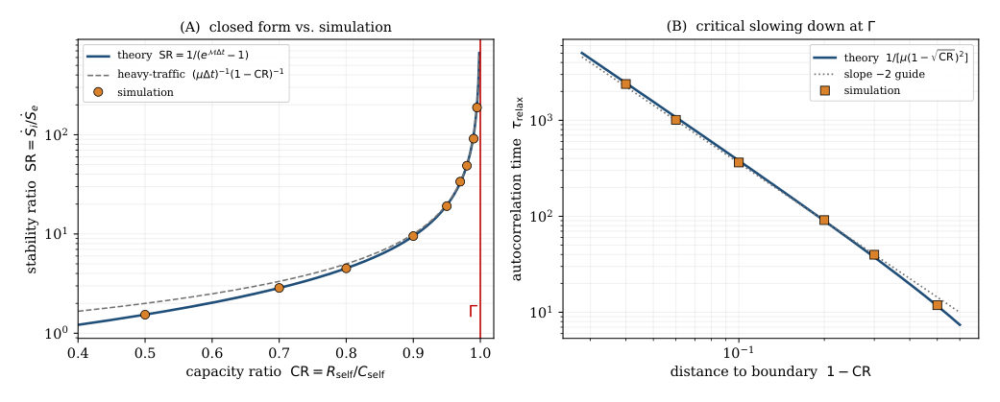
<figcaption class="paper-figure-caption"><b>Fig 1.</b> FIG. 1. Event-driven validation of the closed form and the critical slowing down. (A) The empirical stability ratio (markers) tracks the closed form SR = 1/(eM∆t −1) of Eq. (3) (solid), with heavy-traffic asymptote (µ∆t)−1(1 −CR)−1</figcaption>
</figure>
<figure class="paper-figure-card">
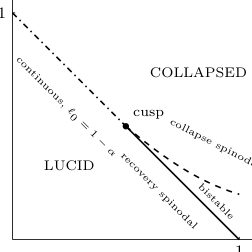
<figcaption class="paper-figure-caption"><b>Fig 2.</b> FIG. 2. Closed-loop phase diagram (drawn for θ = 1; cusp at ( 1</figcaption>
</figure>
<figure class="paper-figure-card">
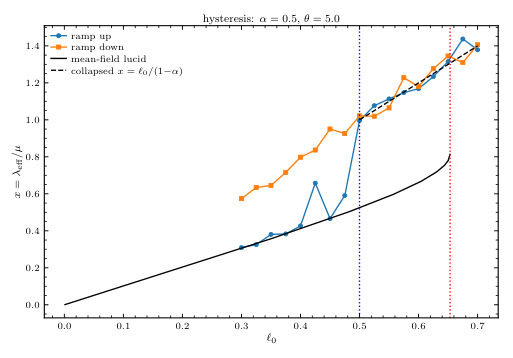
<figcaption class="paper-figure-caption"><b>Fig 3.</b> FIG. 4. Measured hysteresis (θ = 5, α = 0.5; slow ℓ0 ramp, 1500/µ dwell per step). Blue: up-ramp along the mean-field lucid branch (solid), with a metastable flicker at ℓ0 = 0.425 and collapse near 0.50 — below the mean-field spinodal (red dotted), the congestion-correlation enhancement. Orange: down-ramp pinned to the collapsed branch x = ℓ0/(1 −α) (dashed) past the recovery spinodal (blue dotted) by backlog drainage.</figcaption>
</figure>
<figure class="paper-figure-card">
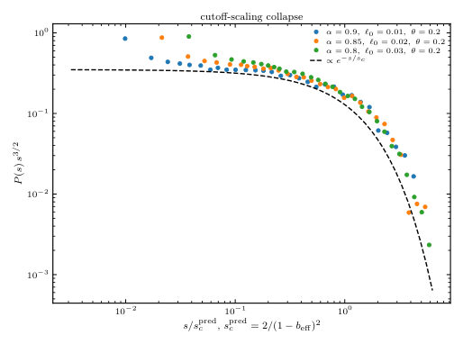
<figcaption class="paper-figure-caption"><b>Fig 4.</b> FIG. 3. Cascade-size statistics: universal exponent, renormalized cutoff. Rescaled distributions P(s) s3/2 vs s/spred c for three parameter points (θ = 0.2; 4–12 × 104 closed cascades each) collapse onto one master curve with the pre- dicted cutoff spred c = 2/(1−beff)2. Maximum-likelihood expo- nents: τ = 1.502(8), 1.492(6), 1.498(7) (1σ).</figcaption>
</figure>
<figure class="paper-figure-card">
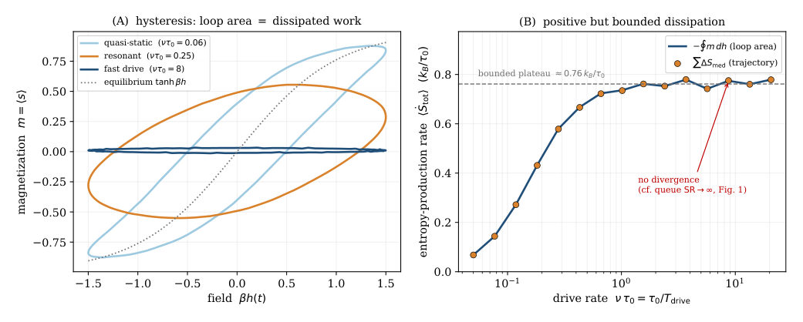
<figcaption class="paper-figure-caption"><b>Fig 5.</b> FIG. 5. Driven two-level system: real but bounded dissipation. (A) Magnetization–field loops at three drive rates; loop area equals the dissipated work per cycle (quasi-static driving hugs the reversible curve; fast driving collapses the response). (B) Period-averaged entropy-production rate versus drive rate, by two independent estimators (loop area; trajectory medium- entropy sum), rising to a bounded plateau — positive everywhere, divergent nowhere, in contrast to the queue (Fig. 1A). β = 1, τ0 = 1, h0 = 1.5 kBT.</figcaption>
</figure>
</div>

<p><strong>Summary.</strong> This theoretical work develops a statistical mechanical criterion for determining when complex adaptive systems lose their ability to recover from irreversible information processing. It models the system's failure as a structural collapse driven by sustained overload, linking computational capacity limits directly to thermodynamic constraints like entropy production and path dependence.</p>
<p><strong>Why it may be interesting.</strong> Although focused on information theory, the framework uses concepts of non-equilibrium thermodynamics, entropy production bounds, and phase transitions ($   ext{M/M/1}$ queueing analogies) that are central to understanding open quantum systems dynamics far from equilibrium.</p>
<details>
<summary>Detailed structure</summary>
<p><strong>Main problem.</strong> The study analyzes adaptive systems that couple inference (information processing) to irreversible action under sustained non-equilibrium driving, aiming to define the structural limits of 'recoverable operation.'</p>
<p><strong>Main result.</strong> Loss of recoverability is a structural consequence of capacity saturation when informational flux exceeds integrative capacity, leading to first-order, hysteretic collapse.</p>
<p><strong>Method.</strong> The analysis uses thermodynamic analogies and queueing theory concepts (e.g., feasibility margin, stability ratio) to characterize the system's operational regimes.</p>
<p><strong>Model / system.</strong> The model treats information processing as a finite-capacity decoder subject to an informational load ($R_{self}$) versus an integrative capacity ($C_{self}$). The dynamics are governed by irreversible commitments that generate synthetic entropy.</p>
<p><strong>Key observables.</strong> Feasibility Margin ($M(t)$), Stability Ratio ($   ext{SR}(t)$), Synthetic Entropy Production ($\dot{S}_{  ext{syn}}$), and the critical ratio $   ext{CR}=1$.</p>
<p><strong>Important parameters / regimes.</strong> The offspring rate ($\alpha$), the grounding fraction, and the time scale separation ratio ($\zeta = 	au_{	ext{cert}}/	au_{	ext{upd}}$).</p>
<p><strong>Assumptions / limitations.</strong> Irreversible commitments eliminate counterfactual options (path dependence), and the analysis is substrate-agnostic, focusing on regime behavior.</p>
<p><strong>Figures summary.</strong> Figures illustrate how the stability ratio ($  ext{SR}$) diverges approaching a critical boundary ($\Gamma:   ext{CR}=1$), and show critical slowing down of autocorrelation time near this boundary.</p>
<p><strong>Paper structure.</strong> The paper builds from defining the thermodynamic load/capacity relationship, establishing diagnostics like $   ext{SR}(t)$, deriving structural collapse conditions (first-order transition), and finally analyzing the consequences in closed feedback loops.</p>
</details>
<details>
<summary>Abstract</summary>
<p>We study adaptive systems coupling inference to irreversible action under sustained nonequilibrium driving. Treating information processing as a thermodynamic load, we model them as finite-capacity decoders whose irreversible commitments eliminate counterfactual options, and characterize recoverable operation by a feasibility margin and a stability diagnostic fixing when irreversible action is admissible. Under sustained overload -- induced flux exceeding effective integrative capacity -- loss of recoverability and divergence of the diagnostic arise as structural consequences of capacity saturation, independent of optimization objective, control policy, or substrate. Added capacity alone does not restore recoverability: absent certification or gating, higher throughput accelerates non-recoverable loss, with high-throughput AI a concrete application. Making the feedback explicit -- each uncertified commitment spawning on average alpha new candidates -- turns the continuous transition first-order: lucid and collapsed states coexist in a cusp-organized bistable region with closed-form spinodals, collapse pre-empts the continuous divergence at finite stability ratio, recovery is hysteretic, and for alpha &gt;= 1 load reduction alone cannot restore operation. Cascade sizes are bounded by the grounded fraction of input: a genealogy-times-congestion factorization sets a cutoff that grows as grounding shrinks, with the mean-field exponent tau = 3/2 recovered away from the boundary and each cascade carrying a Landauer-priced burst of synthetic entropy; event-driven simulations confirm the cutoff law and phase structure. This supplies the statistical mechanics of the metastable failures seen in distributed systems. The analysis is constraint-based and substrate-agnostic, establishing recoverable dissipation as a necessary criterion for decoder stability in high-flux regimes.</p>
</details>
<p><sub><a href="#top">↑ back to top</a></sub></p>

<p><a id="paper-2606.24511"></a></p>
<h3 id="how-rare-are-markovian-quantum-dynamics"><a href="http://arxiv.org/abs/2606.24511v1">How rare are Markovian quantum dynamics?</a></h3>
<p><strong>Authors:</strong> Charlotte Bäcker, Nick Maryshchak, Walter T. Strunz<br>
<strong>Type:</strong> theory · <strong>Category:</strong> other · <strong>PDF:</strong> <a href="https://arxiv.org/pdf/2606.24511v1">https://arxiv.org/pdf/2606.24511v1</a><br>
<strong>Analysis basis:</strong> full PDF text, analyzed in chunks
<strong>Topic relevance:</strong> <code>correlated / nonlocal dissipation</code> <strong>3/5</strong> · <code>methods for driven-dissipative</code> <strong>3/5</strong> · <code>non-equilibrium dynamics</code> <strong>3/5</strong> · <code>driven-dissipative phase transition</code> <strong>2/5</strong> · <code>entanglement &amp; information structure</code> <strong>2/5</strong> · <code>Keldysh / 2PI / non-Gaussian methods</code> <strong>1/5</strong> · <code>analog quantum simulation</code> <strong>1/5</strong> · <code>non-equilibrium universality</code> <strong>1/5</strong></p>
<div class="figure-strip-hint">↔ Scroll figures horizontally</div>
<div class="paper-figures-scroll">
<figure class="paper-figure-card">
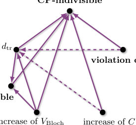
<figcaption class="paper-figure-caption"><b>Fig 1.</b> FIG. 1. Relations between different definitions and witnesses of quantum non-Markovianity. A solid line from node (A) to (B) means that it is proven that non-Markovianity ac- cording to (A) implies non-Markovianity according to (B). A dashed line means that among our results obtained via random sampling of two-step dynamics any dynamics which turned out to be non-Markovian with respect to (A) was also non-Markovian with respect to (B). Nodes in boldface denote definitions of non-Markovianity while other nodes represent witnesses.</figcaption>
</figure>
<figure class="paper-figure-card">
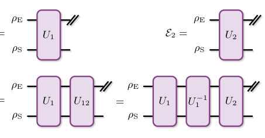
<figcaption class="paper-figure-caption"><b>Fig 2.</b> FIG. 2. Physical motivation of the sampling strategy for a dynamics D = (E1, E2) used in this work. A randomly sam- pled first map E1 can be understood as the application of a random global system-environment unitary operation. While in reality, after having implemented E1 the map E2 is realized in terms of a second random unitary operation U12 on system and environment, it suffices to generate a second map E2 inde- pendently. This can be seen by decomposing U12 = U2 ◦U −1 1 , which implies that a randomly generated map corresponding to the consecutive random unitaries U1 and U21 contains the same information as an independently generated map corre- sponding to the unitary U2. Note that the...</figcaption>
</figure>
<figure class="paper-figure-card">
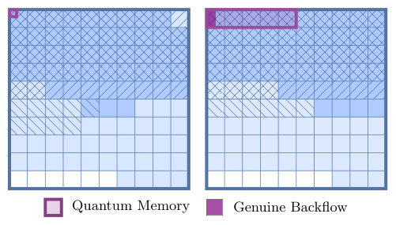
<figcaption class="paper-figure-caption"><b>Fig 3.</b> FIG. 4. Visualization of the fraction of randomly sampled two-step dynamics as in Fig. 3, but for the maximal Kraus ranks kmax = 3 (left) and kmax = 2 (right). The matching between colors, patterns and criteria is the same as in Fig. 3. Here, in addition, lower bounds for the fractions of dynam- ics with quantum memory and genuine backflow according to Sec. III B can be depicted.</figcaption>
</figure>
<figure class="paper-figure-card">
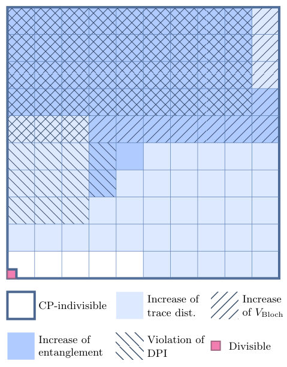
<figcaption class="paper-figure-caption"><b>Fig 4.</b> FIG. 3. Visualization of the fraction of N = 1.000.000 ran- domly sampled two-step dynamics D = (E1, E2) which are non-Markovian according to different definitions and wit- nesses of non-Markovianity. In addition to the fractions for each of the criteria also their overlap with each other is de- picted. See Tab. II for details.</figcaption>
</figure>
<figure class="paper-figure-card">
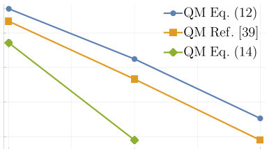
<figcaption class="paper-figure-caption"><b>Fig 5.</b> FIG. 5. Dependence on the maximal Kraus rank kmax of the fraction of dynamics identified as having quantum mem- ory. The original criterion for quantum memory (QM) refers to Eq. (12), the I-Concurrence criterion to the witness es- tablished in Ref. [45] and the entropic witness to Eq. (14). The latter one also serves as a computational tool to identify dynamics requiring genuine backflow in Eq. (13). All these criteria provide lower bounds.</figcaption>
</figure>
</div>

<p><strong>Summary.</strong> The paper rigorously investigates the prevalence of non-Markovian dynamics by testing numerous mathematical witnesses across randomly generated two-step quantum processes. It concludes that memory effects are the generic feature of open quantum evolution, while also developing tools to distinguish between genuine quantum memory and classical forms of information backflow.</p>
<p><strong>Why it may be interesting.</strong> This work provides a rigorous quantitative measure for how often the simple Markov approximation fails in realistic physical scenarios, which is crucial for designing accurate open system models in AMO physics.</p>
<details>
<summary>Detailed structure</summary>
<p><strong>Main problem.</strong> The work investigates how frequently quantum dynamics exhibit memory effects (non-Markovianity) compared to simple, history-independent Markovian evolution.</p>
<p><strong>Main result.</strong> For randomly generated two-step qubit dynamics, the vast majority of processes are non-Markovian, suggesting that memory effects are the generic case in open quantum systems.</p>
<p><strong>Method.</strong> The authors analyze the space of two-step quantum maps by testing multiple mathematical criteria (e.g., CP-indivisibility, trace distance increase) to detect deviations from Markovian behavior.</p>
<p><strong>Model / system.</strong> The study focuses on open quantum dynamics for qubits, modeled as a sequence of two time steps ($D=(E_1, E_2)$). The analysis compares these discrete maps against the continuous-time Lindblad/GKSL master equation framework.</p>
<p><strong>Key observables.</strong> Non-Markovianity witnesses include CP-indivisibility, violation of Data Processing Inequality (DPI), increase in Bloch volume ($V_{	ext{Bloch}}$), and entanglement measures ($C$).</p>
<p><strong>Important parameters / regimes.</strong> The maximal Kraus rank ($k_{	ext{max}}$) is a key parameter used to restrict the space of dynamics being analyzed.</p>
<p><strong>Assumptions / limitations.</strong> The analysis often relies on sampling random two-step dynamics or restricting the channels to specific forms, such as mixed-unitary (MU) maps.</p>
<p><strong>Figures summary.</strong> Figures illustrate the relationships between various definitions and witnesses for non-Markovianity, and show how the fraction of quantum memory depends on the maximal Kraus rank ($k_{	ext{max}}$).</p>
<p><strong>Paper structure.</strong> The paper progresses by first establishing the general prevalence of non-Markovianity using random sampling across multiple criteria. It then refines this by examining specific subclasses (like mixed-unitary dynamics) and distinguishing between quantum memory, genuine backflow, and classical memory effects.</p>
</details>
<details>
<summary>Abstract</summary>
<p>A profound understanding of decoherence and dissipation in quantum dynamics is crucial for the realistic modeling of the evolution of quantum systems. In open quantum dynamics one distinguishes between a memoryless, so-called Markovian evolution and dynamics incorporating memory effects, termed non-Markovian. In this work we study how prevalent memory effects are in the set of all such dynamics. We thus investigate how often a Markovian description is applicable. This question is approached by investigating randomly generated two-step qubit dynamics with respect to different concepts and witnesses of non-Markovianity. We observe that almost all dynamics are non-Markovian, and only a small (yet finite) fraction is Markovian. Furthermore, we study how this proportion changes when considering certain subclasses such as lower rank or mixed-unitary dynamics. Importantly, our results shed light on the relative ratios of -- and interrelations between -- the sets of dynamics that are non-Markovian with respect to different criteria. Finally, we investigate the fraction of dynamics in which the memory effects are necessarily of quantum nature and establish a connection between two recently developed concepts that characterize the quantumness of memory in non-Markovian dynamics.</p>
</details>
<p><sub><a href="#top">↑ back to top</a></sub></p>

<p><a id="paper-2606.24456"></a></p>
<h3 id="interaction-enhanced-ergotropy-in-phase-driven-andreev-bound-state-quantum-batteries"><a href="http://arxiv.org/abs/2606.24456v1">Interaction-Enhanced Ergotropy in Phase-Driven Andreev Bound State Quantum Batteries</a></h3>
<p><strong>Authors:</strong> Disha Verma, B. Vigneshwar, R. Sankaranarayanan<br>
<strong>Type:</strong> theory · <strong>Category:</strong> other · <strong>PDF:</strong> <a href="https://arxiv.org/pdf/2606.24456v1">https://arxiv.org/pdf/2606.24456v1</a><br>
<strong>Analysis basis:</strong> full PDF text, analyzed in chunks
<strong>Topic relevance:</strong> <code>methods for driven-dissipative</code> <strong>3/5</strong> · <code>non-equilibrium dynamics</code> <strong>3/5</strong> · <code>driven-dissipative phase transition</code> <strong>2/5</strong> · <code>non-equilibrium universality</code> <strong>2/5</strong> · <code>Keldysh / 2PI / non-Gaussian methods</code> <strong>1/5</strong> · <code>Kondo &amp; dissipative impurity</code> <strong>1/5</strong> · <code>analog quantum simulation</code> <strong>1/5</strong> · <code>correlated / nonlocal dissipation</code> <strong>1/5</strong> · <code>entanglement &amp; information structure</code> <strong>1/5</strong> · <code>scars &amp; prethermalization</code> <strong>1/5</strong></p>
<div class="figure-strip-hint">↔ Scroll figures horizontally</div>
<div class="paper-figures-scroll">
<figure class="paper-figure-card">
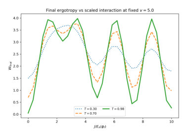
<figcaption class="paper-figure-caption"><b>Fig 1.</b> FIG. 1. Final ergotropy Wfinal as a function of the scaled in- teraction strength J/EA(ϕf) at fixed ramp speed v = 5.0 for representative transparencies T = 0.30 (dotted), 0.70 (dashed), and 0.98 (solid). The interaction initially en- hances the stored extractable work, while larger interaction strengths produce a pronounced oscillatory regime associ- ated with coherent interaction-driven redistribution dynam- ics. The strongest modulation occurs in the nearly ballistic regime T = 0.98.</figcaption>
</figure>
<figure class="paper-figure-card">
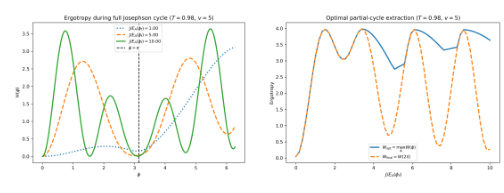
<figcaption class="paper-figure-caption"><b>Fig 2.</b> FIG. 2. (a) Phase-resolved ergotropy W(ϕ) during a full Josephson cycle for different interaction strengths at fixed transparency T = 0.98 and ramp velocity v = 5. The dashed vertical line marks the avoided-crossing point ϕ = π. (b) Comparison between the optimal extractable ergotropy Wopt = maxϕ W(ϕ) and the final-cycle ergotropy Wfinal = W(2π) as a function of interaction strength.</figcaption>
</figure>
<figure class="paper-figure-card">
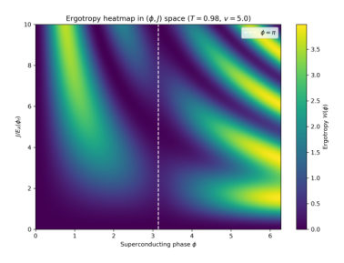
<figcaption class="paper-figure-caption"><b>Fig 3.</b> FIG. 3. Phase-resolved ergotropy landscape W(ϕ) in the combined superconducting phase–interaction parameter space for the high-transparency regime T = 0.98 at fixed ramp speed v = 5.0. The dashed vertical line marks the avoided crossing near ϕ = π.</figcaption>
</figure>
</div>

<p><strong>Summary.</strong> The paper models an interacting Andreev Bound State system as a quantum battery whose stored energy is quantified by ergotropy. By analyzing the charging process driven by superconducting phase ramps, the authors demonstrate that inter-unit interactions profoundly modify energy storage. Crucially, they show that optimal energy extraction requires stopping the cycle at a specific intermediate phase rather than completing the full Josephson period.</p>
<p><strong>Why it may be interesting.</strong> This work connects fundamental concepts of superconducting junctions (ABS) with non-equilibrium thermodynamics (ergotropy), providing a concrete theoretical model for controlling quantum energy harvesting using purely electromagnetic/phase control, which is highly relevant to open quantum systems research.</p>
<details>
<summary>Detailed structure</summary>
<p><strong>Main problem.</strong> The study investigates how superconducting phase dynamics and interaction-induced hybridization can be harnessed to create controllable quantum energy storage in Andreev Bound State (ABS) systems.</p>
<p><strong>Main result.</strong> Interaction significantly enhances the extractable work (ergotropy), revealing that optimal charging requires interrupting the Josephson cycle at a specific, interaction-dependent phase rather than completing the full cycle.</p>
<p><strong>Method.</strong> The research uses theoretical modeling to calculate ergotropy, quantifying extractable work by comparing the system's state against the instantaneous eigenbasis of the battery Hamiltonian during time evolution.</p>
<p><strong>Model / system.</strong> The physical platform is a minimal quantum battery composed of two interacting ABS units realized in superconducting normal-superconductor-normal (SNS) junctions. The dynamics are governed by a time-dependent Hamiltonian incorporating both phase-driven terms and an interaction term ($H(t) = H_{ABS}(t) + H_{int}(J)$).</p>
<p><strong>Key observables.</strong> Ergotropy ($W$), which measures extractable work; the charging dynamics $W(\phi)$; and the comparison between optimal partial-cycle ergotropy ($W_{opt}$) and final-cycle ergotropy ($W_{final}$).</p>
<p><strong>Important parameters / regimes.</strong> Superconducting phase ($\phi$); Junction transparency ($T$, especially high-transparency limit $T=0.98$); Interaction strength ($J$); and the ramp speed ($v$).</p>
<p><strong>Assumptions / limitations.</strong> A two-level truncation is used for dynamics restricted to the subgap sector, and the analysis treats $J$ as an effective phenomenological parameter.</p>
<p><strong>Figures summary.</strong> Figures illustrate the phase evolution of ergotropy ($W(\phi)$) showing oscillations due to interaction; comparisons between optimal vs. final work show divergence at strong coupling; and heatmaps visualize phase-selective charging windows dependent on interaction strength.</p>
<p><strong>Paper structure.</strong> The paper systematically analyzes the system by first defining the Hamiltonian and ergotropy measure, then simulating dynamics across varying interaction strengths ($J$), followed by a detailed phase-resolved analysis comparing partial versus full Josephson cycle extraction protocols.</p>
</details>
<details>
<summary>Abstract</summary>
<p>We investigate a phase-driven quantum battery composed of two interacting Andreev bound state (ABS) units, providing a minimal superconducting platform for coherent energy storage. By analyzing the ergotropy dynamics under a superconducting phase ramp, we show that the interplay between avoided-crossing excitation and interaction-induced hybridization strongly modifies the charging process. In the high-transparency regime relevant for graphene SNS junctions, the interaction enhances the stored extractable work and generates pronounced oscillatory charging dynamics associated with coherent redistribution between coupled ABS sectors. The phase-resolved evolution further reveals optimal charging windows during the Josephson cycle, indicating the possibility of phase-programmable energy extraction through partial-cycle operation. Overall, our results identify interaction-assisted avoided-crossing dynamics as a microscopic mechanism for controllable energy storage in superconducting quantum batteries.</p>
</details>
<p><sub><a href="#top">↑ back to top</a></sub></p>

<p><a id="paper-2606.23795"></a></p>
<h3 id="visualizing-symmetry-broken-chern-insulators-and-their-quantum-melting"><a href="http://arxiv.org/abs/2606.23795v1">Visualizing Symmetry Broken Chern Insulators and their Quantum Melting</a></h3>
<p><strong>Authors:</strong> Minhao He, Yen-Chen Tsui, Ran Peng, Kenji Watanabe, Takashi Taniguchi, Oskar Vafek, Ali Yazdani<br>
<strong>Type:</strong> experiment · <strong>Category:</strong> strongly correlated electrons · <strong>PDF:</strong> <a href="https://arxiv.org/pdf/2606.23795v1">https://arxiv.org/pdf/2606.23795v1</a><br>
<strong>Analysis basis:</strong> full PDF text, analyzed in chunks
<strong>Topic relevance:</strong> <code>analog quantum simulation</code> <strong>3/5</strong> · <code>driven-dissipative phase transition</code> <strong>3/5</strong> · <code>methods for driven-dissipative</code> <strong>3/5</strong> · <code>non-equilibrium dynamics</code> <strong>2/5</strong> · <code>non-equilibrium universality</code> <strong>2/5</strong> · <code>Frenkel-Kontorova</code> <strong>1/5</strong> · <code>Keldysh / 2PI / non-Gaussian methods</code> <strong>1/5</strong></p>
<div class="figure-strip-hint">↔ Scroll figures horizontally</div>
<div class="paper-figures-scroll">
<figure class="paper-figure-card">
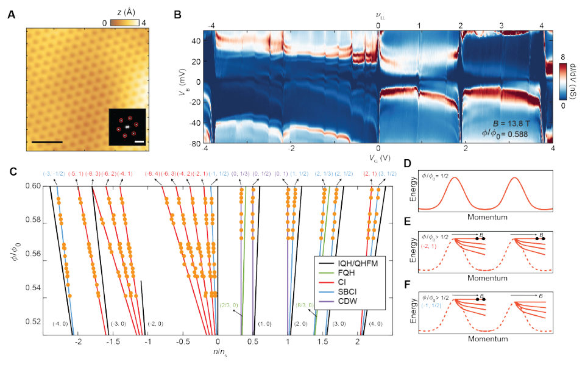
<figcaption class="paper-figure-caption"><b>Fig 1.</b> Fig. 1. Spectroscopic studies of Hofstadter’s spectrum in Bernal-stacked bilayer graphene/hBN heterostructure. (A) A clean topograph of a device with periodic structure of bilayer graphene/hBN moiré. The black scale bar is 50 nm. The inset shows the Fourier transform of the topography map, the Bragg peaks of the moiré are marked by red circles, the corresponding periodicity is 14.28 nm. The white scale bar of the inset is 0.5 nm-1. (B) A density (tuned by gate voltages VG) dependent STS measured at B=13.8 T, 𝜙/𝜙! = 0.588. The vertical axis is the tip bias voltage VB where it probes the electron (hole) excitation at VB &gt;0 (VB &lt;0). On VG &gt;0 (VG &lt;0), the electrons are away from (close to)...</figcaption>
</figure>
<figure class="paper-figure-card">
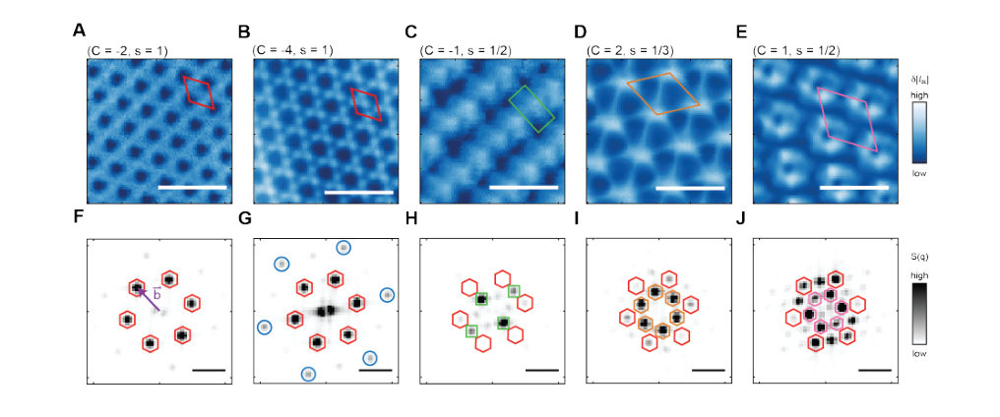
<figcaption class="paper-figure-caption"><b>Fig 2.</b> Fig. 2. Direct imaging of Chern insulators. (A-E) Real space tunneling current 𝛿|Idc| maps measured at (A-C) B=13.2 T, (D, E) B=13.8 T and low bias voltages VB of each (C, s) states. The white scale bar is 40 nm. (F-J) Structure factor 𝑆(𝒒I⃑) of the tunneling current modulation 𝛿|Idc| in panels A-E, respectively. The scale bar is 0.5 nm-1. The bilayer graphene/hBN moiré Bragg peaks are identified by red hexagons. (A, F) (-2, 1) state respects the moiré translational symmetry. The red parallelogram is the moiré unit cell. (B, G) Emergent Kagome lattice for (-4, 1) state respects the moiré translational symmetry. The Kagome structure shows up as higher harmonics (blue circles) in the 𝑆(𝒒I⃑)...</figcaption>
</figure>
<figure class="paper-figure-card">
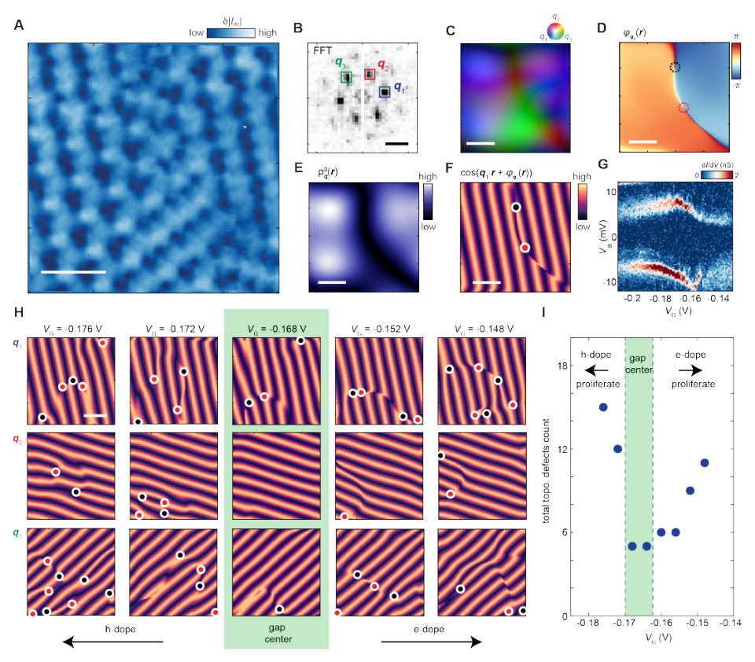
<figcaption class="paper-figure-caption"><b>Fig 3.</b> Fig. 3. Topological melting of a symmetry broken Chern insulator (SBCI) (C=-1, s=1/2). (A) A large real space tunneling current 𝛿|Idc| map measured at B=13.8 T and VB = 6 mV. The stripes with different orientations can be identified. (B) FFT of the 𝛿|Idc| map in (A), the stripes with different orientations are identified by 𝒒)*&#x27;,&quot;,, vectors. The scale bar is 0.25 nm-1. (C) The real space distribution of normalized amplitude of the three 𝒒)*&#x27;,&quot;,, vectors. (D) The extracted relative phase 𝜑𝒒!(𝒓) map. Where the topological defect is identified by dotted black (red) circles, with the clockwise winding of the phase is 2𝜋 (-2𝜋). The black (red) circle is the dislocation (anti-dislocation). (E)...</figcaption>
</figure>
<figure class="paper-figure-card">
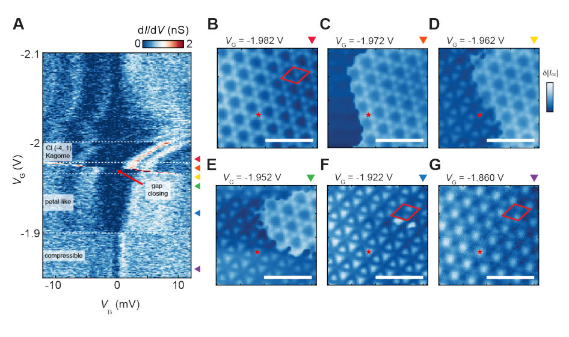
<figcaption class="paper-figure-caption"><b>Fig 4.</b> Fig. 4. Phase separation and quantum melting of a Chern Insulator. (A) STS near a (C, s) = (-4, 1) state at magnetic field B = 13.2 T. The incompressible spectroscopic features of the Kagome CI as well as gap closing (between orange and yellow arrows) are labeled. The gap closing happens when the sharp phase boundary in (C, D) passes underneath the tip, indicating that the phase boundary is compressible. The gate voltages for images in (B-G) are marked with colored arrows on the right side of the spectrum. (B) The tunneling current 𝜹|Idc| map measured at gate voltage VG= -1.982 V (red) and low bias voltages VB = 4.8 mV shows an emergent Kagome lattice. The moiré unit cell is marked with red...</figcaption>
</figure>
</div>

<p><strong>Summary.</strong> The research uses STM/STS on moiré graphene to study Chern insulators under magnetic fields. The key findings are the direct visualization of symmetry breaking in these states, leading to reconstructed unit cells at fractional fillings. Furthermore, the authors observe quantum melting and phase separation transitions driven by topological defects, providing deep insight into strongly correlated electron behavior.</p>
<p><strong>Why it may be interesting.</strong> This work provides direct experimental evidence of complex many-body phenomena—such as charge density wave formation, topological defect dynamics, and quantum melting—in a tunable solid-state platform, offering insights into strongly correlated electron physics beyond simple band theory.</p>
<details>
<summary>Detailed structure</summary>
<p><strong>Main problem.</strong> The study investigates the interplay between band topology (Chern insulators) and strong electron-electron interactions in moiré quantum materials, focusing on visualizing symmetry breaking and quantum melting phenomena.</p>
<p><strong>Main result.</strong> The authors directly visualize Symmetry Broken Chern Insulators (SBCIs) that reconstruct the moiré unit cell at fractional fillings. They also observe evidence for quantum melting via topological defect proliferation and phase separation transitions.</p>
<p><strong>Method.</strong> Scanning Tunneling Microscopy (STM) and Spectroscopy (STS) are used to image electronic states, complemented by analyzing the spatial structure factor $S(\mathbf{q}|\mathbf{r})$ of the tunneling current.</p>
<p><strong>Model / system.</strong> The physical system is bilayer graphene aligned with hexagonal BN ($    ext{h-BN}$), forming a moiré superlattice. The physics is governed by Hofstadter's spectrum, which describes electronic states under combined magnetic fields and lattice periodicity.</p>
<p><strong>Key observables.</strong> Incompressible gaps in STS spectra; spatial modulation of tunneling current $\delta|I_{dc}|$; emergent lattice structures (Kagome, stripe); density of topological defects (dislocations).</p>
<p><strong>Important parameters / regimes.</strong> Magnetic field ($B$) and flux ratio ($\phi/\phi_!$), gate voltage ($V_G$), and filling factor $s$. Measurements are performed at low temperatures ($T_{eff} = 210 	ext{ mK}$).</p>
<p><strong>Assumptions / limitations.</strong> The analysis relies on mapping observed gaps and band structures to topological indices $(C, s)$ derived from the Wannier diagram formula.</p>
<p><strong>Figures summary.</strong> Figures detail direct imaging of CI states showing emergent lattice reconstructions (e.g., Kagome for $(-4, 1)$), phase maps illustrating defect proliferation during quantum melting for stripe phases, and diagrams showing phase separation boundaries.</p>
<p><strong>Paper structure.</strong> The paper progresses from establishing the theoretical framework using Wannier diagrams to mapping out various $(C, s)$ topological states. It then moves into detailed real-space imaging to confirm symmetry breaking (reconstruction) and finally analyzes dynamic transitions like quantum melting and phase separation as doping changes.</p>
</details>
<details>
<summary>Abstract</summary>
<p>In the presence of a magnetic field, electronic states of moiré quantum materials develop a Hofstadter spectrum that provides a unique setting for studying the interplay between band topology and strong electron-electron interaction. Using scanning tunneling microscopy, we study Hofstadter's states in bilayer graphene aligned with hexagonal BN and directly visualize the formation of interaction-driven symmetry breaking Chern insulators. Our measurements reveal the formation of phases that double, triple or quadruple the moiré unit cell at fractional filling of the Hofstadter bands, as well as states with complex intra-unit-cell wave functions. We visualize two distinct quantum phenomena in different Chern states, including quantum melting driven by the appearance and proliferation of topological defects, and a quantum transition co-occurring with phase competition and separation.</p>
</details>
<p><sub><a href="#top">↑ back to top</a></sub></p>

<p><a id="paper-2606.24705"></a></p>
<h3 id="exceptional-by-design-long-range-hopping-as-a-knob-for-exceptional-point-control"><a href="http://arxiv.org/abs/2606.24705v1">Exceptional by Design: Long-Range Hopping as a Knob for Exceptional Point Control</a></h3>
<p><strong>Authors:</strong> Carolina Martinez-Strasser, Dario Bercioux, Nico Leumer<br>
<strong>Type:</strong> theory · <strong>Category:</strong> other · <strong>PDF:</strong> <a href="https://arxiv.org/pdf/2606.24705v1">https://arxiv.org/pdf/2606.24705v1</a><br>
<strong>Analysis basis:</strong> full PDF text, analyzed in chunks
<strong>Topic relevance:</strong> <code>driven-dissipative phase transition</code> <strong>3/5</strong> · <code>methods for driven-dissipative</code> <strong>3/5</strong> · <code>analog quantum simulation</code> <strong>2/5</strong> · <code>non-equilibrium universality</code> <strong>2/5</strong> · <code>Keldysh / 2PI / non-Gaussian methods</code> <strong>1/5</strong> · <code>Kondo &amp; dissipative impurity</code> <strong>1/5</strong> · <code>correlated / nonlocal dissipation</code> <strong>1/5</strong> · <code>non-equilibrium dynamics</code> <strong>1/5</strong></p>
<div class="figure-strip-hint">↔ Scroll figures horizontally</div>
<div class="paper-figures-scroll">
<figure class="paper-figure-card">
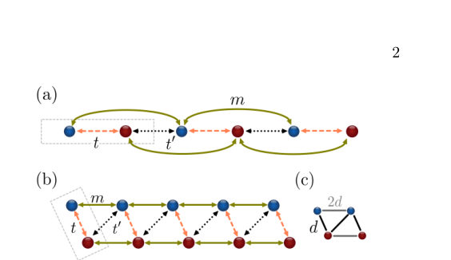
<figcaption class="paper-figure-caption"><b>Fig 1.</b> Figure 1. Sketch of the model in real space. (a) SSH chain with t, t′ for intra- and inter-cell hopping, and m for long-range hopping terms. Sublattice A (B) sites, shown in blue (red), encode gain/loss ±iγ and on-site energies ϵA,B. The gray box indicates the unit cell. (b) The system is rep- resented as a quantum ladder, with sublattices coupled by t and t′. (c) Real space distances of panel (b) in terms of the lattice constant d.</figcaption>
</figure>
<figure class="paper-figure-card">
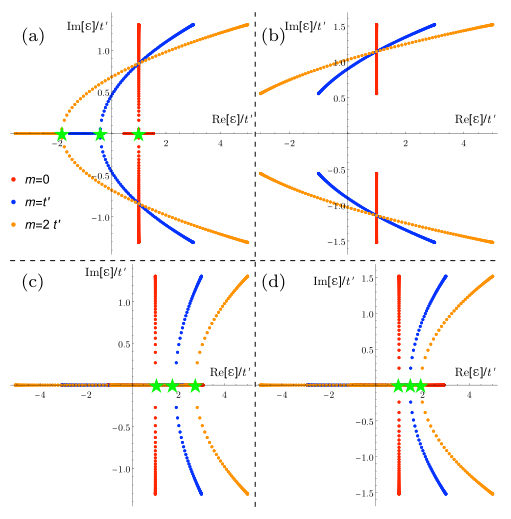
<figcaption class="paper-figure-caption"><b>Fig 2.</b> Figure 2. Bulk complex spectrum and exceptional points. Bulk energy spectrum of H(k) in the complex plane, parametrized by k ∈BZ, for fixed ϵ+ = t′ and ϵ−= 0. Each panel shows three superposed spectra corresponding to m = 0 (red), m = t′ (blue), and m = 2t′ (orange). Parameters: (a) t = t′/2, γ = 1.4 t′; (b) t = t′/2, γ = 1.6 t′; (c) t = 3t′/2, γ = 1.4 t′; (d) t = 3t′/2, γ = 1.6 t′. For m = 0, the spectrum is purely imaginary (up to the constant real shift ϵ+), while for m ̸= 0, the next-nearest-neighbor hopping introduces a k-dependent dispersion of the real part, producing genuinely complex bands. Green stars mark the bulk EPs, which lie on the real axis at Re (EEP) = ϵ+ −2m cos(kEPd)....</figcaption>
</figure>
<figure class="paper-figure-card">
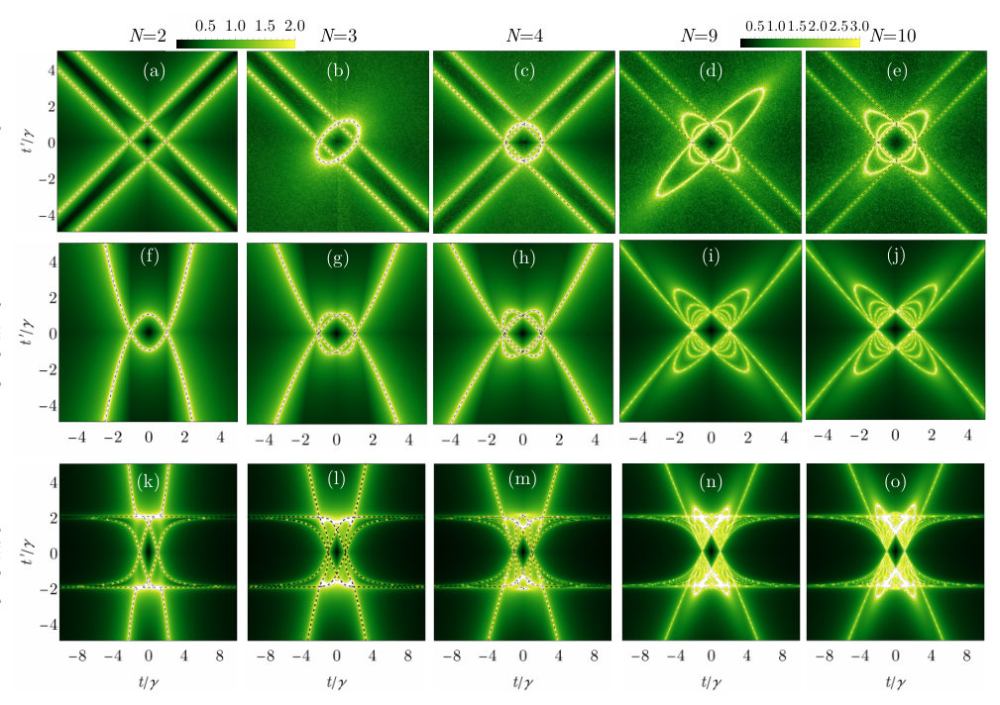
<figcaption class="paper-figure-caption"><b>Fig 3.</b> Figure 3. Finite-size EPs under PBC and OBC. (a) For PBC, the 10-base logarithm of the condition matrix K(U) diverges at EPs. These divergences coincide with the analytic result from Eq. (8) (black dashed lines). For odd N, the lines with positive slopes t ± γ are absent. For N &gt; 2, the EPs form ellipses and rings. (a) N = 2, (b) N = 3, (c) N = 4, (d) N = 9, and (e) N = 10. In all the panels ϵ± = 0 and m = 0. Note that these results are m-independent, since the value of m only changes the degeneracy energy at the EPs. Note as well that for N = 9, 10, we indicate only the analytic lines corresponding to ±t ± γ.</figcaption>
</figure>
<figure class="paper-figure-card">
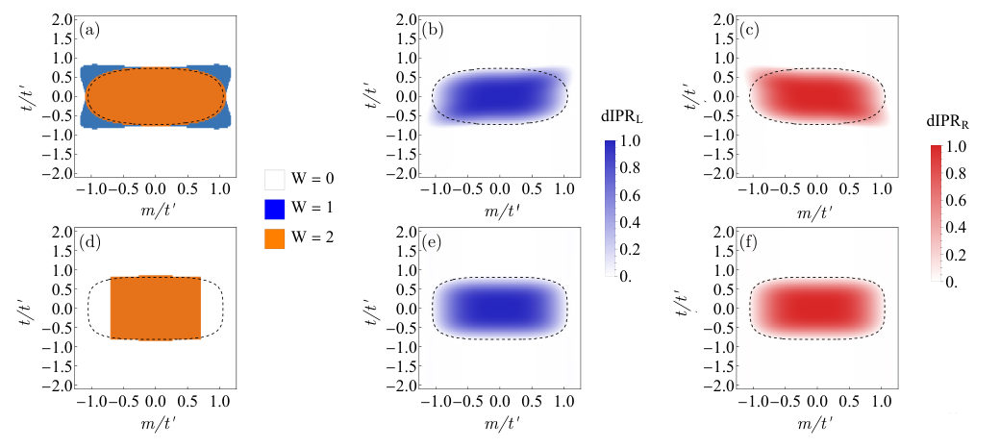
<figcaption class="paper-figure-caption"><b>Fig 4.</b> Figure 4. Phase diagram and wavefunction localization. Winding and directional inverse participation ratio (dIPR) for N = 40, γ = √</figcaption>
</figure>
<figure class="paper-figure-card">
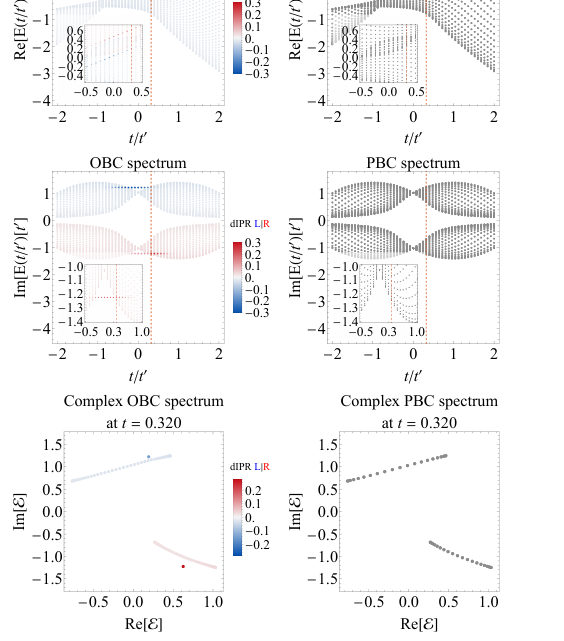
<figcaption class="paper-figure-caption"><b>Fig 5.</b> Figure 5. Topological phase transition spectra and edge state emergence. OBC and PBC phase-transition spectra of the non-Hermitian next-nearest-neighbour Rice– Mele model for N = 40, γ = √</figcaption>
</figure>
</div>

<p><strong>Summary.</strong> This paper analyzes the topological phase diagram of a non-Hermitian lattice model by studying its exceptional points (EPs) under periodic versus open boundary conditions. It demonstrates that long-range hopping terms significantly alter the EP structure in OBC compared to PBC, while confirming the existence and characterization of topologically protected edge states using winding numbers.</p>
<p><strong>Why it may be interesting.</strong> This work directly addresses non-Hermitian physics, a field highly relevant to open quantum systems, wave propagation in lossy media, and engineered photonic/electronic structures where gain/loss are inherent.</p>
<details>
<summary>Detailed structure</summary>
<p><strong>Main problem.</strong> The study investigates the exceptional point (EP) structure and topological properties of non-Hermitian lattice models, specifically focusing on how long-range hopping terms modify these features under different boundary conditions.</p>
<p><strong>Main result.</strong> The model exhibits second-order EPs whose dependence on next-nearest-neighbor hopping ($m$) differs significantly between periodic and open boundary conditions; furthermore, topological edge states are confirmed via winding number analysis in OBC.</p>
<p><strong>Method.</strong> Theoretical analysis combining numerical computation (condition number, Jordan decomposition) with analytical tools like the winding number framework and M-Riemann algebra formalism to map out parameter space degeneracies.</p>
<p><strong>Model / system.</strong> A generalized non-Hermitian Rice-Mele model described by a 1D tight-binding Hamiltonian incorporating intra-cell hopping ($t$), inter-cell hopping ($t'$), next-nearest-neighbor hopping ($m$), and gain/loss terms ($\pm i\gamma$).</p>
<p><strong>Key observables.</strong> Exceptional Points (EPs), topological invariants (winding number $W_j$), edge state eigenvalues, and the Directional Inverse Participation Ratio (dIPR).</p>
<p><strong>Important parameters / regimes.</strong> Hopping ratios ($t/t'$, $m/\gamma$), boundary conditions (PBC vs. OBC), and system size ($N$).</p>
<p><strong>Assumptions / limitations.</strong> The analysis focuses on second-order EPs, and specific symmetries are assumed or broken to simplify the topological classification.</p>
<p><strong>Figures summary.</strong> Figures illustrate EP structures as lines/ellipses in parameter space for both PBC and OBC; phase diagrams map out edge state regimes using winding numbers and dIPR values.</p>
<p><strong>Paper structure.</strong> The paper systematically analyzes the Hamiltonian, first establishing bulk properties under PBC (independence of $m$), then contrasting this with OBC where $m$ actively generates new EPs. Finally, it uses topological invariants and localization measures to confirm boundary-induced edge states.</p>
</details>
<details>
<summary>Abstract</summary>
<p>Exceptional points are degeneracies unique to non-Hermitian systems, where eigenvalues and eigenvectors coalesce, rendering the Hamiltonian defective. We investigate the exceptional-point structure and topological properties of a generalized non-Hermitian Rice-Mele model with balanced gain and loss, as well as next-nearest-neighbor hopping. The system hosts only second-order exceptional points under both periodic and open boundary conditions. Under periodic boundary conditions, the exceptional points in parameter space lie on lines and ellipses that are independent of the next-nearest-neighbor hopping, since the latter enters the bulk Hamiltonian only as an identity contribution. Under open boundary conditions, this independence is broken: the next-nearest-neighbor hopping not only shifts the energy of existing exceptional points but also generates new ones, with a specific condition signaling a topological gap closing observed only in the open-boundary spectrum. At special parameter points, multiple simultaneous second-order exceptional points yield degenerate configurations whose degeneracy grows with system size. Exceptional point locations are identified numerically via the condition number of the eigenvector matrix and confirmed by Jordan decomposition. The topological phase diagram, computed via a winding number framework for non-Hermitian systems without symmetry protection, reveals sectors with zero, one, and two edge states; the bulk-boundary correspondence is confirmed, and the non-Hermitian skin effect is absent.</p>
</details>
<p><sub><a href="#top">↑ back to top</a></sub></p>

<p><a id="paper-2606.24283"></a></p>
<h3 id="investigating-causality-between-principal-components-in-protein-dynamics"><a href="http://arxiv.org/abs/2606.24283v1">Investigating causality between principal components in protein dynamics</a></h3>
<p><strong>Authors:</strong> Debarshi Banerjee, Ali Hassanali, Alessandro Laio<br>
<strong>Type:</strong> theory · <strong>Category:</strong> statistical mechanics · <strong>PDF:</strong> <a href="https://arxiv.org/pdf/2606.24283v1">https://arxiv.org/pdf/2606.24283v1</a><br>
<strong>Analysis basis:</strong> full PDF text, analyzed in chunks
<strong>Topic relevance:</strong> <code>entanglement &amp; information structure</code> <strong>3/5</strong> · <code>methods for driven-dissipative</code> <strong>3/5</strong> · <code>non-equilibrium dynamics</code> <strong>3/5</strong> · <code>non-equilibrium universality</code> <strong>2/5</strong> · <code>Keldysh / 2PI / non-Gaussian methods</code> <strong>1/5</strong> · <code>correlated / nonlocal dissipation</code> <strong>1/5</strong> · <code>driven-dissipative phase transition</code> <strong>1/5</strong></p>
<div class="figure-strip-hint">↔ Scroll figures horizontally</div>
<div class="paper-figures-scroll">
<figure class="paper-figure-card">
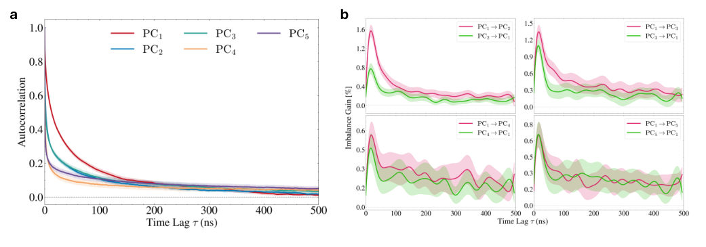
<figcaption class="paper-figure-caption"><b>Fig 1.</b> Figure 1. Ubiquitin: (a) The autocorrelation functions of the top 5 PCs, PCi=1,5, which are colored red, blue, green, orange, and purple respectively, with shaded areas denoting error bars. (b) The pairwise IG curves over time between PC1 ⇔PC2,3,4,5. The IG values are on the Y-axis, and time lag (τ) in nanoseconds is on the X-axis. Pink lines denote the direction PC1 →PC2,3,4,5, whereas green lines denote the reverse direction. Shaded areas denote error bars computed over 20 independent realizations.</figcaption>
</figure>
<figure class="paper-figure-card">
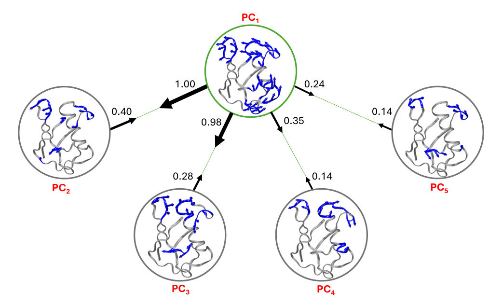
<figcaption class="paper-figure-caption"><b>Fig 2.</b> Figure 2. Ubiquitin: Putative causal links between PC1 and the remaining leading principal components. Nodes represent the first five PCs, and directed edges indicate the normalized integrated Imbalance Gain, IGT, defined in Eq. 3. For each pair, the edge length and width, as well as the numerical label report the relative strength of the directional information transfer, with larger values corresponding to stronger causal links. The strongest links are observed from PC1 toward PC2 and PC3, whereas the links involving PC4 and PC5 are substantially weaker. For each PC, the residues with the largest contributions to the corresponding eigenvector are highlighted in blue on the protein...</figcaption>
</figure>
<figure class="paper-figure-card">
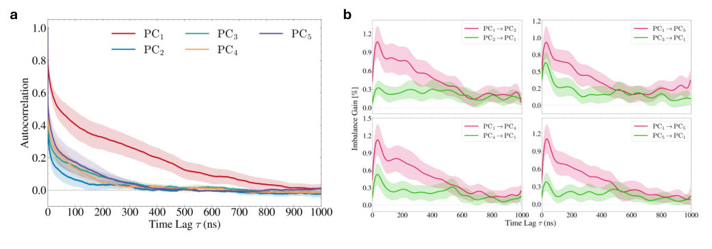
<figcaption class="paper-figure-caption"><b>Fig 3.</b> Figure 3. NTL9: (a) The autocorrelation functions of the top 5 PCs, PCi=1,5, which are colored red, blue, green, orange, and purple respectively, with shaded areas denoting error bars. (b) The pairwise IG curves over time between PC1 ⇔PC2,3,4,5. The IG values are on the Y-axis, and time lag (τ) in nanoseconds is on the X-axis. Pink lines denote the direction PC1 →PC2,3,4,5, whereas green lines denote the reverse direction. Shaded areas denote error bars computed over 20 independent realizations.</figcaption>
</figure>
<figure class="paper-figure-card">
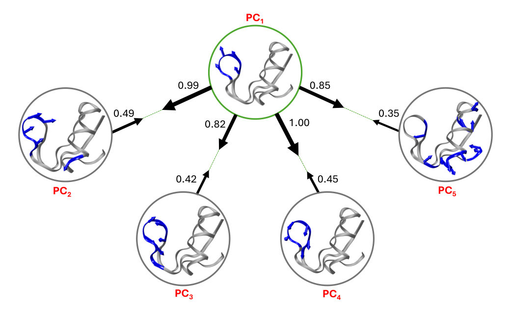
<figcaption class="paper-figure-caption"><b>Fig 4.</b> Figure 4. NTL9: Putative causal links between PC1 and the remaining leading principal components. Nodes represent the first five PCs, and directed edges indicate the normalized integrated Imbalance Gain, IGT, defined in Eq. 3. For each pair, the edge length and width, as well as the numerical label report the relative strength of the directional information transfer, with larger values corresponding to stronger causal links. PC1 displays strong directional influence toward all other leading PCs considered, identifying it as a dominant slow driver within the folded-state dynamics of NTL9. For each PC, the residues with the largest contributions to the corresponding eigenvector are...</figcaption>
</figure>
</div>

<p><strong>Summary.</strong> This work applies advanced causal inference techniques to molecular dynamics simulations of protein folding. By quantifying directional information flow between Principal Components, the authors demonstrate that collective motions exhibit a directed causal structure, suggesting that slow structural fluctuations dictate subsequent faster movements within the protein's conformational landscape.</p>
<p><strong>Why it may be interesting.</strong> While focused on biomolecules, the methodology—using information-theoretic measures like IG to infer directed relationships in high-dimensional time series—is a powerful tool applicable to analyzing complex non-equilibrium dynamics in many-body systems beyond proteins.</p>
<details>
<summary>Detailed structure</summary>
<p><strong>Main problem.</strong> The study investigates whether different Principal Components (PCs) derived from protein dynamics simulations causally influence each other over time, moving beyond simple correlation measures.</p>
<p><strong>Main result.</strong> The causal inference approach reveals directed information flow ($ ext{PC1}    o {    ext{PC2},   ext{PC3}}$) in both ubiquitin and NTL9, suggesting that the slowest collective mode drives subsequent faster fluctuations. This directional structure is not captured by conventional covariance-based analyses.</p>
<p><strong>Method.</strong> The core method employs a causal-discovery framework based on Information Imbalance (IG), which quantifies predictive asymmetry between time series derived from MD simulations.</p>
<p><strong>Model / system.</strong> The system studied is the dynamics of proteins, specifically ubiquitin and NTL9, simulated using Molecular Dynamics (MD) trajectories. The analysis reduces the high-dimensional conformational space into a set of collective variables represented by Principal Components (PCs).</p>
<p><strong>Key observables.</strong> Pairwise Integrated Information Transfer (IGT), Brüschweiler collectivity index ($\kappa_k$), and time-lagged covariance matrices $\Gamma(	au)$.</p>
<p><strong>Important parameters / regimes.</strong> Time lags ($    au$) up to the microsecond scale, and the magnitude of the Imbalance Gain ($   ext{IG}$).</p>
<p><strong>Assumptions / limitations.</strong> The inferred causal links are putative; they suggest necessary but not sufficient conditions for true causality due to potential unobserved confounders.</p>
<p><strong>Figures summary.</strong> Figures illustrate autocorrelation functions showing decorrelation timescales, pairwise IG curves demonstrating directional asymmetry (e.g., $ ext{PC1}    o   ext{PC2}$), and resulting causal graphs mapping the strongest information flow paths.</p>
<p><strong>Paper structure.</strong> The paper introduces PCA/TICA limitations, details the application of the Information Imbalance framework to calculate directed couplings between PCs for two proteins (Ubiquitin and NTL9), presents results showing directional influence from slow modes to fast modes, and concludes by discussing implications for understanding protein dynamics organization.</p>
</details>
<details>
<summary>Abstract</summary>
<p>Principal component analysis (PCA) is widely used to characterize collective protein motions from molecular dynamics (MD) simulations. While PCA identifies the dominant modes of structural fluctuation, it does not reveal whether different principal components (PCs) causally influence each other. Here, we investigate this question using a recently introduced causal-discovery framework [Del Tatto et al, PNAS 2024], which allows to infer putative causal asymmetries between high-dimensional time series. We apply this approach to long-timescale MD trajectories of two proteins. By analyzing relationships among PCs, we construct directed networks describing how PCs influence one another across time scales. These directional relationships, whose existence is a necessary condition for the presence of a causal link, are not captured by conventional covariance-based analyses and provide information that is complementary to PCA and Time-lagged Independent Component Analysis (TICA). Our results suggest that our causal inference approach can uncover previously hidden aspects of the dynamical organization of protein motions and offer a new perspective on this very popular class of collective variables.</p>
</details>
<p><sub><a href="#top">↑ back to top</a></sub></p>

<p><a id="paper-2606.24613"></a></p>
<h3 id="the-math408math-effect-from-a-multimode-squeezed-graviton-state"><a href="http://arxiv.org/abs/2606.24613v1">The $ω$-Effect from a Multimode Squeezed Graviton State</a></h3>
<p><strong>Authors:</strong> Nick E. Mavromatos, Sarben Sarkar<br>
<strong>Type:</strong> theory · <strong>Category:</strong> other · <strong>PDF:</strong> <a href="https://arxiv.org/pdf/2606.24613v1">https://arxiv.org/pdf/2606.24613v1</a><br>
<strong>Analysis basis:</strong> full PDF text, analyzed in chunks
<strong>Topic relevance:</strong> <code>Keldysh / 2PI / non-Gaussian methods</code> <strong>3/5</strong> · <code>correlated / nonlocal dissipation</code> <strong>3/5</strong> · <code>driven-dissipative phase transition</code> <strong>2/5</strong> · <code>entanglement &amp; information structure</code> <strong>2/5</strong> · <code>methods for driven-dissipative</code> <strong>1/5</strong> · <code>non-equilibrium dynamics</code> <strong>1/5</strong> · <code>non-equilibrium universality</code> <strong>1/5</strong> · <code>quantum optics experiment</code> <strong>1/5</strong></p>
<div class="figure-strip-hint">↔ Scroll figures horizontally</div>
<div class="paper-figures-scroll">
<figure class="paper-figure-card">
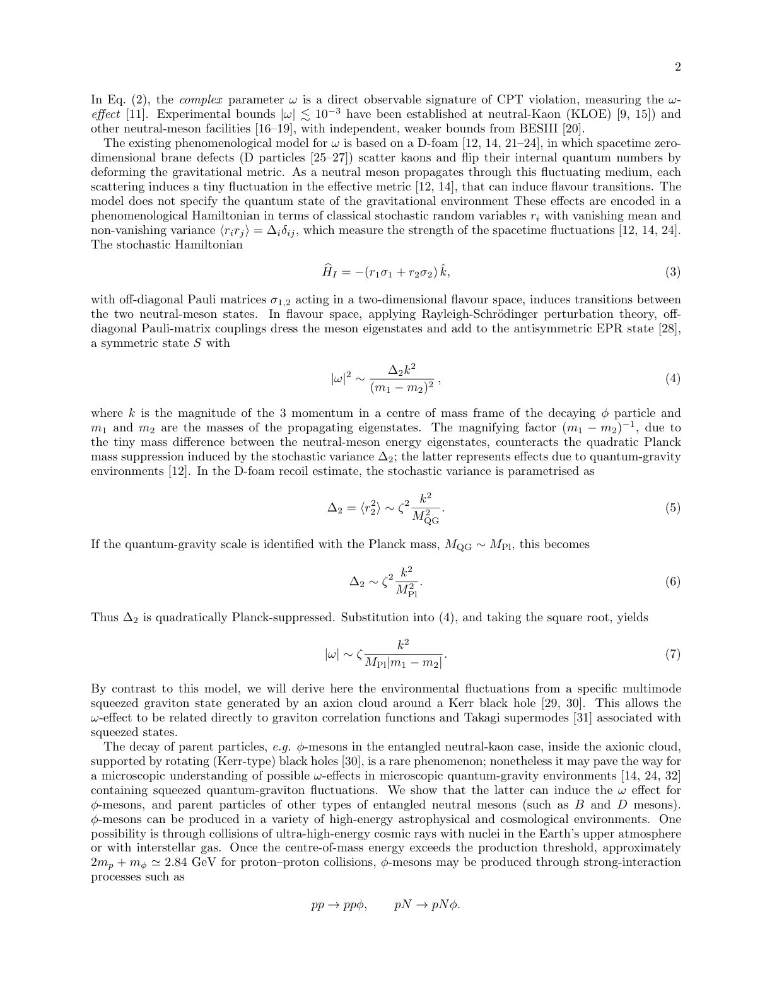
<figcaption class="paper-figure-caption"><b>Fig 1.</b> Low-resolution page preview, page 2</figcaption>
</figure>
<figure class="paper-figure-card">
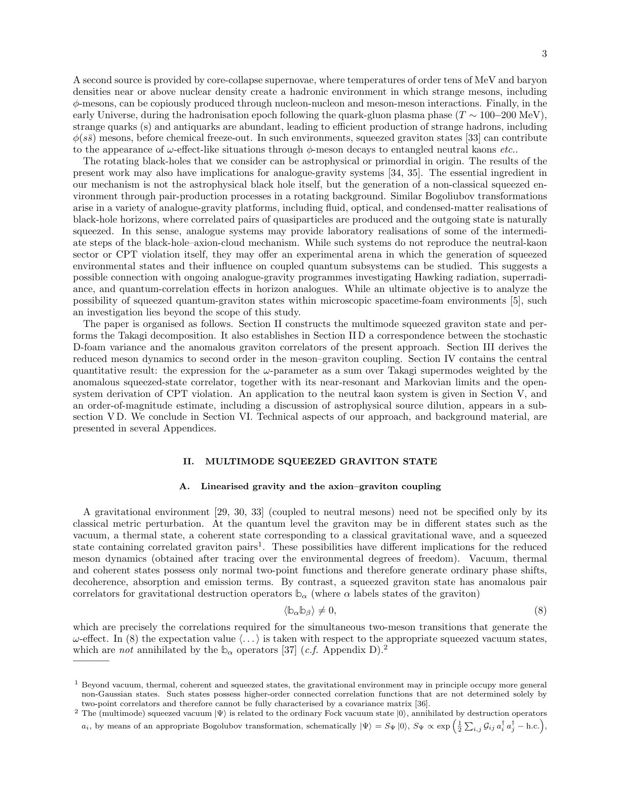
<figcaption class="paper-figure-caption"><b>Fig 2.</b> Low-resolution page preview, page 3</figcaption>
</figure>
<figure class="paper-figure-card">
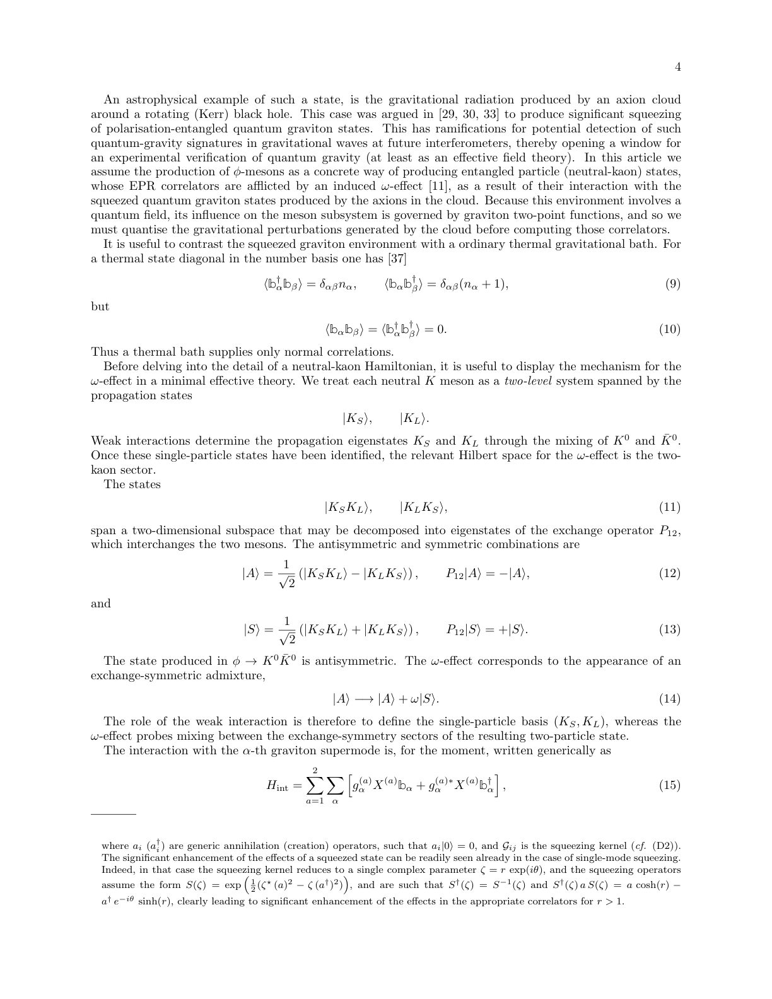
<figcaption class="paper-figure-caption"><b>Fig 3.</b> Low-resolution page preview, page 4</figcaption>
</figure>
<figure class="paper-figure-card">
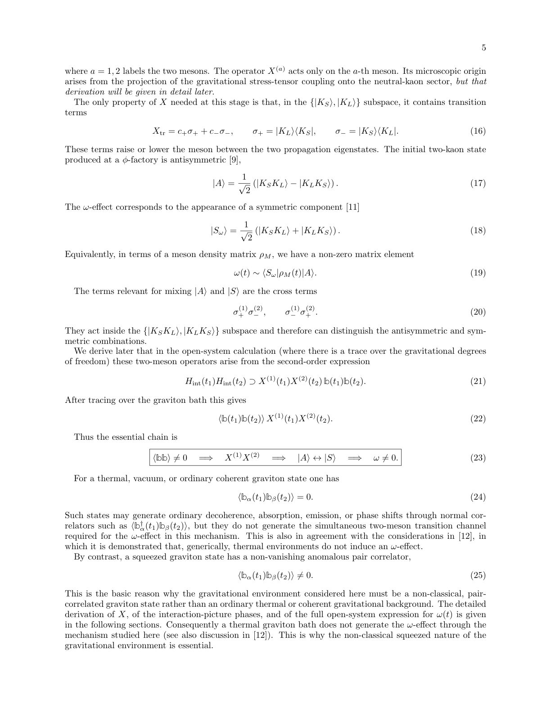
<figcaption class="paper-figure-caption"><b>Fig 4.</b> Low-resolution page preview, page 5</figcaption>
</figure>
<figure class="paper-figure-card">
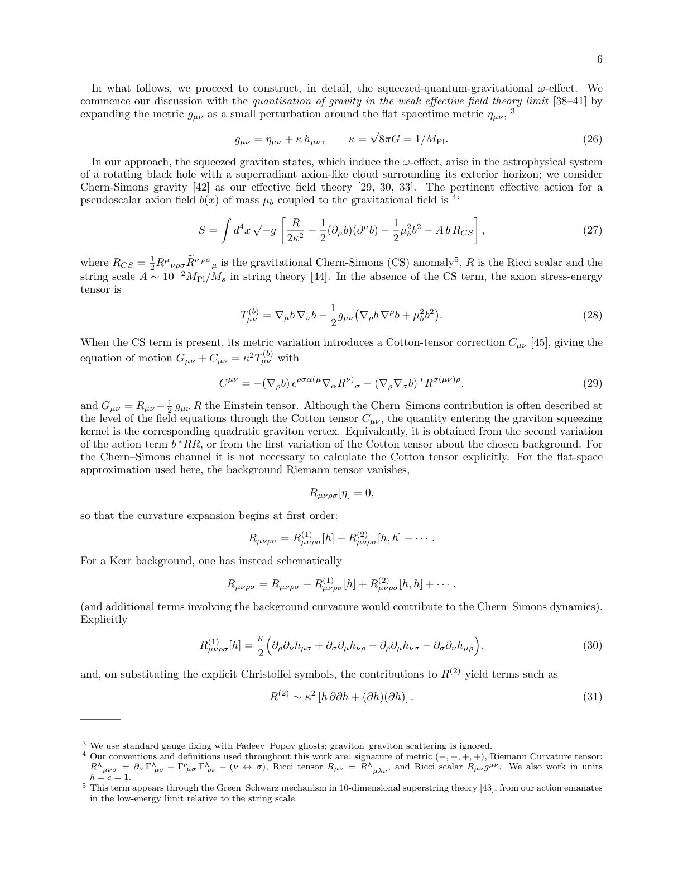
<figcaption class="paper-figure-caption"><b>Fig 5.</b> Low-resolution page preview, page 6</figcaption>
</figure>
</div>

<p><strong>Summary.</strong> The paper develops a microscopic framework to calculate the $\omega$-effect—a signature of CPT violation in neutral mesons—by modeling the environment as a multimode squeezed graviton bath. It replaces older phenomenological models with calculable anomalous correlators derived from the squeezing kernel. The result shows that this effect is a generic consequence of non-classical gravitational environments interacting coherently with particle decay processes.</p>
<p><strong>Why it may be interesting.</strong> This work provides a concrete, calculable mechanism for generating decoherence/CPT violation signatures ($\omega$-effect) in particle physics systems by linking it directly to measurable quantum features (squeezing) of gravitational fields, bridging high-energy theory with quantum optics concepts.</p>
<details>
<summary>Detailed structure</summary>
<p><strong>Main problem.</strong> The paper investigates the $\omega$-effect, a phenomenon that probes CPT violation induced by interactions with inaccessible quantum-gravitational degrees of freedom in entangled neutral-meson systems.</p>
<p><strong>Main result.</strong> A non-zero $\omega$ parameter is predicted, quantifying an exchange-symmetric admixture in the meson state. This effect requires both flavor-changing weak interactions and the presence of anomalous correlators characteristic of a squeezed gravitational environment.</p>
<p><strong>Method.</strong> The authors derive this effect by performing an open-system calculation involving tracing over the quantum graviton bath, replacing previous phenomenological stochastic variables with calculable graviton correlation functions derived from the Takagi decomposition of the squeezing kernel.</p>
<p><strong>Model / system.</strong> The system involves entangled neutral mesons (e.g., kaons) interacting with a multimode squeezed gravitational field generated by an axion cloud around a Kerr black hole, modeled using concepts from Chern-Simons gravity and supermodes.</p>
<p><strong>Key observables.</strong> The parameter $\omega$, which measures the small exchange-symmetric admixture in the otherwise antisymmetric EPR state of the mesons.</p>
<p><strong>Important parameters / regimes.</strong> Squeezing amplitudes ($r_\alpha$), squeezing phases ($\phi_\alpha$), weak-interaction flavour-mixing matrix elements, and the energy splitting/decay rates of the kaons ($\Delta\lambda$).</p>
<p><strong>Assumptions / limitations.</strong> The derivation relies on treating the gravitational bath as a squeezed vacuum state (requiring anomalous correlators $\langle b_\alpha b_eta 
angle 
eq 0$) and utilizes approximations like the Born approximation and RWA.</p>
<p><strong>Paper structure.</strong> The paper builds from establishing the physical problem ($\omega$-effect) to deriving the necessary quantum gravitational input (squeezed graviton state via Takagi decomposition), and finally calculating the resulting meson evolution using an open-system master equation approach.</p>
</details>
<details>
<summary>Abstract</summary>
<p>The $ω$-effect in entangled neutral-meson systems provides a sensitive probe of CPT violation induced by quantum-gravitational environments. In open quantum systems, interactions with inaccessible gravitational degrees of freedom can render the reduced meson dynamics non-unitary, causing the CPT operator to become ill-defined, even when the underlying microscopic Hamiltonian is CPT invariant. We present a microscopic derivation of the $ω$-effect arising from a multimode squeezed gravitational environment generated by an axion cloud around a Kerr black hole. Using the Takagi decomposition of the associated complex symmetric squeezing kernel, the graviton field is expressed in terms of independent squeezed supermodes possessing anomalous correlators. These correlators provide a microscopic quantum counterpart of the stochastic fluctuations that appear in earlier D-particle foam descriptions of the $ω$-effect, replacing phenomenological variances of flavour-changing D-particle recoil by calculable graviton correlation functions. After tracing over the graviton bath, the anomalous correlators and the weak-interactions-induced mixing combine to generate transitions between the antisymmetric and symmetric two-meson sectors. This results in a small exchange-symmetric admixture, parametrised by $ω$, in the otherwise antisymmetric EPR state. We obtain an explicit expression for $ω$ in terms of a sum over Takagi supermodes weighted by their squeezing amplitudes and phases together with the weak-interaction flavour-mixing matrix element. The resulting framework suggests that the $ω$-effect may be a generic signature of non-classical states of gravitational environments, extending beyond the specific axion-cloud scenario considered here. The observability of the $ω$-effect from other astrophysical and microscopic black-hole sources is discussed.</p>
</details>
<p><sub><a href="#top">↑ back to top</a></sub></p>

<p><a id="paper-2606.23800"></a></p>
<h3 id="unitary-designs-from-doped-matchgate-circuits"><a href="http://arxiv.org/abs/2606.23800v1">Unitary Designs from Doped Matchgate Circuits</a></h3>
<p><strong>Authors:</strong> Fabian Ballar Trigueros, Zheng-Hang Sun, Xhek Turkeshi, Piotr Sierant, Poetri Sonya Tarabunga<br>
<strong>Type:</strong> theory · <strong>Category:</strong> quantum information and computing · <strong>PDF:</strong> <a href="https://arxiv.org/pdf/2606.23800v1">https://arxiv.org/pdf/2606.23800v1</a><br>
<strong>Analysis basis:</strong> full PDF text, analyzed in chunks
<strong>Topic relevance:</strong> <code>methods for driven-dissipative</code> <strong>3/5</strong> · <code>analog quantum simulation</code> <strong>2/5</strong> · <code>entanglement &amp; information structure</code> <strong>2/5</strong> · <code>non-equilibrium dynamics</code> <strong>2/5</strong> · <code>Keldysh / 2PI / non-Gaussian methods</code> <strong>1/5</strong> · <code>correlated / nonlocal dissipation</code> <strong>1/5</strong> · <code>driven-dissipative phase transition</code> <strong>1/5</strong> · <code>non-equilibrium universality</code> <strong>1/5</strong></p>
<div class="figure-strip-hint">↔ Scroll figures horizontally</div>
<div class="paper-figures-scroll">
<figure class="paper-figure-card">
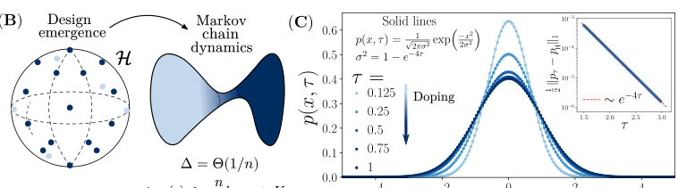
<figcaption class="paper-figure-caption"><b>Fig 1.</b> Figure 1. Doping protocols and emergence of randomness in matchgate circuits. (A) schematic illustration of the global and localized doping constructions, in which non-Gaussian gates A are inserted into otherwise fermionic Gaussian dynamics. (B) Repeated doping drives the circuit ensemble toward unitary design behaviour in Hilbert space, which we analytically map to effective Markov-chain dynamics. The key Markov-chain quantities, such as the spectral gap ∆and the mixing time tmix, govern the design emergence. (C) Relaxation of the distribution pτ (Eq. (31)) toward the stationary Haar distribution pH (Eq. (38)) in doped matchgate circuits initialized in the vacuum state ψ0 = ∣0⟩⟨0∣⊗n,...</figcaption>
</figure>
<figure class="paper-figure-card">
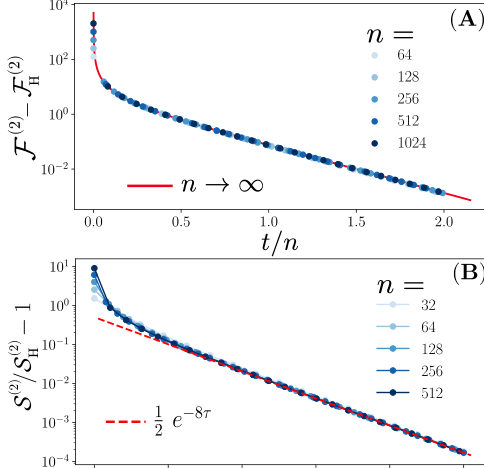
<figcaption class="paper-figure-caption"><b>Fig 2.</b> Figure 2. (A) Deviation of the unitary 2-frame potential from the Z2-symmetric Haar value, as a function of doping depth. The solid red line shows the thermodynamic-limit prediction from the perturbative approach, while markers denote values obtained from the exact doping-matrix method. (B) Relative deviation of the state 2-frame potential, as a function of dop- ing depth.</figcaption>
</figure>
<figure class="paper-figure-card">
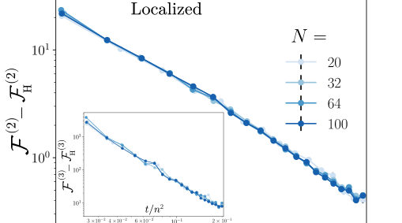
<figcaption class="paper-figure-caption"><b>Fig 3.</b> Figure 4. Deviation of the unitary 2-frame potential from the Z2-symmetric Haar value, as a function of doping depth for the localized doping scheme shown in Fig. 1(A). The inset shows the corresponding value for the unitary 3-frame poten- tial.</figcaption>
</figure>
<figure class="paper-figure-card">
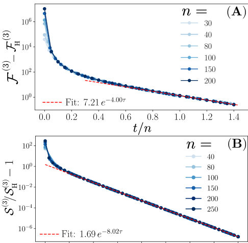
<figcaption class="paper-figure-caption"><b>Fig 4.</b> Figure 3. (A) Deviation of the unitary 3-frame potential from the Z2-symmetric Haar value, as a function of doping depth. (B) Relative deviation of the state 3-frame potential, as a function of doping depth.</figcaption>
</figure>
<figure class="paper-figure-card">
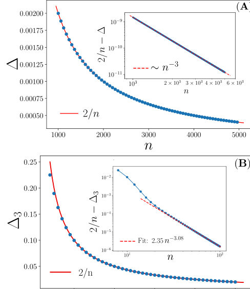
<figcaption class="paper-figure-caption"><b>Fig 5.</b> Figure 5. System-size scaling of the spectral gap ∆[Eq. (40)] of the doping matrix for (A) two and (B) three copies. In both cases the leading behaviour is consistent with the Ornstein– Uhlenbeck value ∆∼2/n, matching the rigorous ∆= Θ(1/n) of Eq. (60) at two copies. Insets: subleading corrections, scal- ing as ∼n−3.</figcaption>
</figure>
</div>

<p><strong>Summary.</strong> The paper develops a theoretical framework showing how injecting controlled fermionic interactions ('doping') into otherwise simple matchgate circuits can generate high levels of quantum randomness. By mapping the problem to classical Markov chains, they derive rigorous bounds on the depth needed to achieve unitary $k$-designs. This offers a controlled pathway from integrable physics toward complex quantum information processing.</p>
<p><strong>Why it may be interesting.</strong> This work provides an analytically tractable method to bridge the gap between integrable (free-fermion) quantum systems and highly random, complex dynamics required for universal quantum computation.</p>
<details>
<summary>Detailed structure</summary>
<p><strong>Main problem.</strong> The research addresses how structured, free-fermion dynamics (like those in matchgate circuits) can be modified by injecting non-Gaussian interactions to generate the necessary randomness for achieving unitary quantum designs.</p>
<p><strong>Main result.</strong> They establish that doping these circuits allows for controlled formation of approximate unitary 2-designs in polylogarithmic depth, with convergence rates governed by classical Markov chain dynamics and spectral gaps.</p>
<p><strong>Method.</strong> The analysis uses the matchgate commutant framework to map the quantum design problem onto a solvable classical birth-death Markov chain, allowing for rigorous bounding of mixing times and required gate counts.</p>
<p><strong>Model / system.</strong> The system is based on 'doped matchgate circuits,' which start with free-fermion dynamics but are perturbed by non-Gaussian gates (fermionic interactions) to induce controlled entanglement growth towards Haar randomness.</p>
<p><strong>Key observables.</strong> Unitary $k$-design formation, spectral gaps ($\Delta$), mixing times ($t_{	ext{mix}}$), and frame potentials ($F^{(k)}(E)$).</p>
<p><strong>Important parameters / regimes.</strong> The doping depth (number of non-Gaussian gates) and the spatial structure of the doping (global vs. local/brickwork).</p>
<p><strong>Assumptions / limitations.</strong> The analysis is most tractable in the globally scrambled regime, and the results rely on projecting dynamics onto the matchgate commutant.</p>
<p><strong>Figures summary.</strong> Figures illustrate schematic doping protocols comparing global versus localized scrambling; they also show data collapse of frame potentials for $k=2$ and $k=3$, confirming relaxation towards Haar behavior.</p>
<p><strong>Paper structure.</strong> The paper systematically analyzes the convergence rate to quantum designs by first establishing the mapping to a classical Markov chain, deriving bounds using spectral gap analysis, comparing global vs. local doping protocols, and finally providing explicit scaling laws for different design orders ($k=2, 3, 4$).</p>
</details>
<details>
<summary>Abstract</summary>
<p>Matchgate circuits realize free-fermion dynamics: they are efficiently classically simulable, yet cannot on their own generate the generic randomness required for universal computation or unitary design formation. We study a controlled route beyond this integrable limit by doping matchgate circuits with non-Gaussian gates-physically, the injection of fermionic interactions into an otherwise free system. Using the matchgate commutant framework, we obtain analytic control over unitary $2$-design formation. For globally scrambled dynamics, the design problem maps exactly onto a classical birth-death Markov chain with an Ornstein-Uhlenbeck continuum limit, recasting the emergence of quantum randomness in terms of spectral gaps and mixing times and yielding rigorous bounds on the number of non-Gaussian gates needed for approximate $2$-designs. These bounds hold for a broad class of parity-preserving non-Gaussian gates, independently of microscopic details, with numerics indicating that the same mechanism governs higher-order designs. Used as local building blocks in a glued-circuit architecture, they yield approximate parity-preserving $2$-designs in polylogarithmic depth with a sparse non-Gaussian gate count, with implications for Page-like entanglement growth and fermionic classical-shadow protocols. Finally, locality reshapes this picture: in local brickwork dynamics, design formation is diffusion-limited and far slower. Our results establish doped matchgate circuits as a controlled, analytically tractable route from free fermions to interaction-generated quantum designs.</p>
</details>
<p><sub><a href="#top">↑ back to top</a></sub></p>

<p><a id="paper-2606.23810"></a></p>
<h3 id="universal-dynamical-response-to-slow-driving-in-chaotic-systems"><a href="http://arxiv.org/abs/2606.23810v1">Universal Dynamical Response to Slow Driving in Chaotic Systems</a></h3>
<p><strong>Authors:</strong> Nachiket Karve, Nathan Rose, David Campbell, Anatoli Polkovnikov<br>
<strong>Type:</strong> theory · <strong>Category:</strong> statistical mechanics · <strong>PDF:</strong> <a href="https://arxiv.org/pdf/2606.23810v1">https://arxiv.org/pdf/2606.23810v1</a><br>
<strong>Analysis basis:</strong> full PDF text, analyzed in chunks
<strong>Topic relevance:</strong> <code>non-equilibrium dynamics</code> <strong>3/5</strong> · <code>entanglement &amp; information structure</code> <strong>2/5</strong> · <code>non-equilibrium universality</code> <strong>2/5</strong> · <code>Keldysh / 2PI / non-Gaussian methods</code> <strong>1/5</strong> · <code>analog quantum simulation</code> <strong>1/5</strong> · <code>correlated / nonlocal dissipation</code> <strong>1/5</strong> · <code>driven-dissipative phase transition</code> <strong>1/5</strong> · <code>methods for driven-dissipative</code> <strong>1/5</strong> · <code>scars &amp; prethermalization</code> <strong>1/5</strong></p>
<div class="figure-strip-hint">↔ Scroll figures horizontally</div>
<div class="paper-figures-scroll">
<figure class="paper-figure-card">
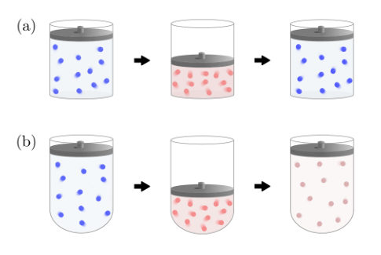
<figcaption class="paper-figure-caption"><b>Fig 1.</b> FIG. 1: (a) Slow, cyclic driving of a regular system. The system returns to its initial state at the end of the drive. (b) On the other hand, a chaotic system fails to follow the drive adiabatically, which may manifest as heating.</figcaption>
</figure>
<figure class="paper-figure-card">
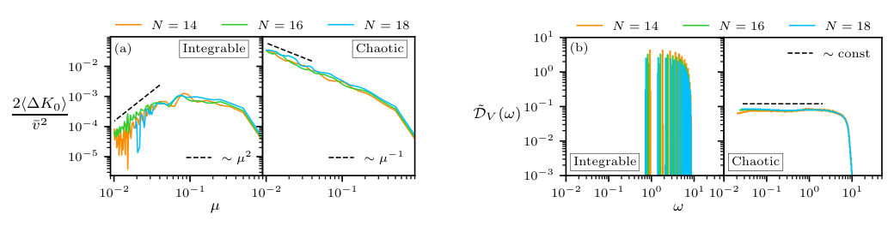
<figcaption class="paper-figure-caption"><b>Fig 2.</b> FIG. 2: (a) The thermodynamic drag, 2⟨∆K0⟩/¯v2, as a function of µ for the Gibbs ensemble, with kBT = 100, of the integrable (left) and chaotic (right) Ising models, with system sizes of N = 14 (orange), 16 (green), and 18 (cyan). (b) The corresponding normalized spectral functions ˜DV (ω). Parameters used – integrable model: J = 1, hx = 1.05, hz = 0, chaotic model: J = 1, hx = 1.05, hz = 0.5.</figcaption>
</figure>
<figure class="paper-figure-card">
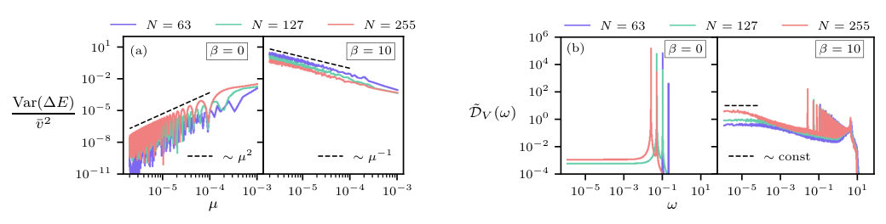
<figcaption class="paper-figure-caption"><b>Fig 3.</b> FIG. 3: (a) Var(∆E)/¯v2 as a function of µ in a classical β-FPUT model with β = 0 (left) and β = 10 (right), initialized in a microcanonical ensemble with E = 1. System sizes of N = 63 (purple), 127 (green), and 255 (pink)</figcaption>
</figure>
<figure class="paper-figure-card">
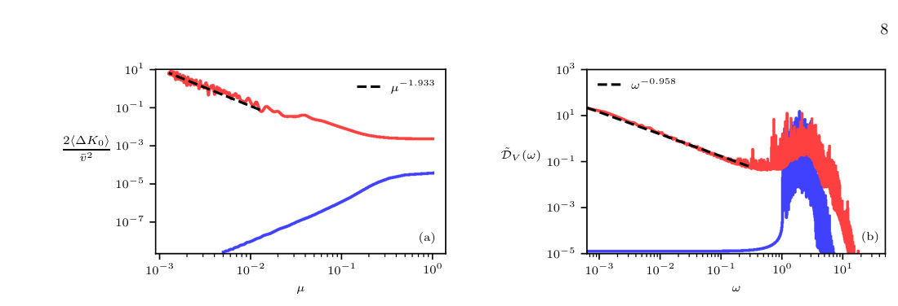
<figcaption class="paper-figure-caption"><b>Fig 4.</b> FIG. 4: (a) The thermodynamic drag, 2⟨∆K0⟩/¯v2, as a function of µ for the Gibbs ensemble, with kBT = 100, of the integrable (blue) and chaotic (red) quantum two-spin models, with S = 10. (b) The corresponding normalized classical spectral functions ˜DV (ω). Parameters used: integrable model – J = (1, 1, 1/2), A = (0, 0, 0), chaotic model – J = (3/2, π, √e), A = (√π, √</figcaption>
</figure>
<figure class="paper-figure-card">
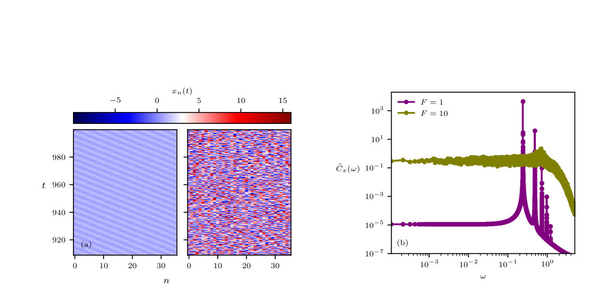
<figcaption class="paper-figure-caption"><b>Fig 5.</b> FIG. 5: (a) Time evolution of a N = 36 site Lorenz-96 system with F = 1 (left) and F = 10 (right). (b) Spectral function of x.</figcaption>
</figure>
</div>

<p><strong>Summary.</strong> The authors propose using the Speed-Fisher Information as a universal measure to characterize chaos by observing how a system's stationary state responds to slow external driving. They show that chaotic dynamics cause this information to diverge inversely with the driving speed, while regular dynamics result in finite or vanishing responses. This provides a powerful link between spectral properties and fundamental concepts of irreversibility.</p>
<p><strong>Why it may be interesting.</strong> This work provides a powerful, measurable diagnostic tool—the speed-Fisher information—to distinguish between regular and chaotic dynamics in quantum systems without relying solely on traditional metrics like Lyapunov exponents. This has direct implications for understanding thermalization rates in open or driven quantum systems.</p>
<details>
<summary>Detailed structure</summary>
<p><strong>Main problem.</strong> To develop a unified diagnostic tool for characterizing chaos in both classical and quantum systems by analyzing their response to slow, non-adiabatic driving.</p>
<p><strong>Main result.</strong> Chaos manifests as a divergence of the speed-Fisher information ($I_{ar{v}}(\mu)$) as the driving protocol time approaches zero ($\mu 	o 0$), with the degree of divergence controlled by the low-frequency spectral weight of system observables.</p>
<p><strong>Method.</strong> The analysis centers on calculating the Speed-Fisher Information, derived from the fidelity or relative entropy change during slow cyclic perturbations. This is related to the low-frequency behavior of correlation functions via Fourier transforms.</p>
<p><strong>Model / system.</strong> The framework applies broadly to classical and quantum Hamiltonian systems (e.g., Ising models) and extends naturally to non-Hamiltonian classical flows. The analysis uses stationary states $
ho_{-\infty}$ subjected to time-dependent perturbations $H(t)$.</p>
<p><strong>Key observables.</strong> Speed-Fisher Information ($I_{ar{v}}(\mu)$), Relative Entropy ($    ext{D}_{    ext{KL}}$), and the low-frequency spectral weight of correlation functions.</p>
<p><strong>Important parameters / regimes.</strong> The driving speed $\mu$, which is taken to zero in the quasi-static limit; parameters determining system integrability (e.g., coupling constants $J, A$).</p>
<p><strong>Assumptions / limitations.</strong> The analysis relies on approximations relating entropy change to variance ($\langle \Delta K_0 
angle \approx rac{1}{2} 	ext{Var}(\Delta K_0)$) and assumptions about the decay rates of spectral weights in different dynamical regimes.</p>
<p><strong>Figures summary.</strong> Figures illustrate the comparison of thermodynamic drag (or $I_{ar{v}}(\mu)$) vs. $\mu$ for both regular (finite/saturating) and chaotic (diverging) quantum systems, alongside corresponding classical spectral functions.</p>
<p><strong>Paper structure.</strong> The paper establishes the diagnostic tool ($I_{ar{v}}$), derives its connection to thermodynamics ($   ext{D}_{    ext{KL}}$), applies it across various physical models (quantum/classical/non-Hamiltonian), and systematically analyzes scaling laws based on the low-frequency spectral behavior of observables.</p>
</details>
<details>
<summary>Abstract</summary>
<p>We propose a unified perspective on classical and quantum chaos based on the stability of a system's stationary states under slow driving. We probe this sensitivity via the system's susceptibility to the average protocol speed, which we call the ``speed-Fisher information," and relate it to irreversible entropy production in the system. We show that chaotic dynamics manifests as a divergence of the speed-Fisher information with the protocol time, and that this response is controlled by the perturbation's low-frequency spectral weight. This approach to chaos applies to both classical and quantum Hamiltonian systems, and naturally extends to non-Hamiltonian classical flows. We illustrate this framework with simple classical and quantum examples, along with a non-Hamiltonian flow that qualitatively exhibits analogous low-frequency spectral behavior.</p>
</details>
<p><sub><a href="#top">↑ back to top</a></sub></p>

<p><a id="paper-2606.24352"></a></p>
<h3 id="typical-geometry-of-self-repelling-polymers-in-a-constant-force-field"><a href="http://arxiv.org/abs/2606.24352v1">Typical geometry of self-repelling polymers in a constant force field</a></h3>
<p><strong>Authors:</strong> Kamil Khettabi, Yvan Velenik<br>
<strong>Type:</strong> theory · <strong>Category:</strong> statistical mechanics · <strong>PDF:</strong> <a href="https://arxiv.org/pdf/2606.24352v1">https://arxiv.org/pdf/2606.24352v1</a><br>
<strong>Analysis basis:</strong> full PDF text, analyzed in chunks
<strong>Topic relevance:</strong> <code>Keldysh / 2PI / non-Gaussian methods</code> <strong>3/5</strong> · <code>driven-dissipative phase transition</code> <strong>2/5</strong> · <code>non-equilibrium dynamics</code> <strong>2/5</strong> · <code>non-equilibrium universality</code> <strong>2/5</strong> · <code>Frenkel-Kontorova</code> <strong>1/5</strong> · <code>analog quantum simulation</code> <strong>1/5</strong> · <code>methods for driven-dissipative</code> <strong>1/5</strong></p>
<div class="figure-strip-hint">↔ Scroll figures horizontally</div>
<div class="paper-figures-scroll">
<figure class="paper-figure-card">
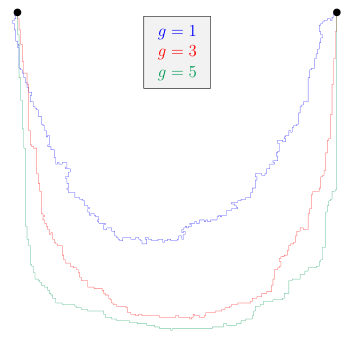
<figcaption class="paper-figure-caption"><b>Fig 1.</b> Figure 2: Simulation of the model with α = 3, a = 0 and N = 200 (left) and N = 1000 (right) for various values of g, in the case of the self-avoiding walk.</figcaption>
</figure>
<figure class="paper-figure-card">
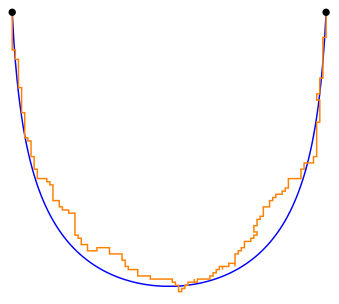
<figcaption class="paper-figure-caption"><b>Fig 2.</b> Figure 3: Simulation of the model with α = 3, a = 0, g = 3 and N = 100 (left) and N = 1000 (right), in the case of the simple random walk. The blue curve is the geodesic of equation (20).</figcaption>
</figure>
<figure class="paper-figure-card">
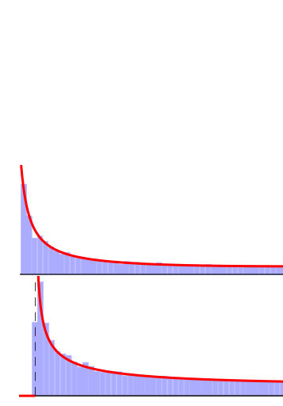
<figcaption class="paper-figure-caption"><b>Fig 3.</b> Figure 4: Histogram of the empirical monomer density associated to one trajectory of the simple random walk model with α = 3, a = 0, g = 3 and N = 10000. Top: horizontal marginal of the empirical monomer measure (blue) and the corresponding marginal of the variational monomer measure (η∗)#Leb[0,α] (red). Bottom: the same for the vertical marginal; the dashed line marks the lower edge of the support of the limiting measure, where the theoretical density has an integrable singularity.</figcaption>
</figure>
<figure class="paper-figure-card">
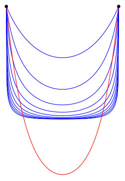
<figcaption class="paper-figure-caption"><b>Fig 4.</b> Figure 5: Left: The geodesics of equation (20) for a = 0, α = 3 and values of g ranging from 1 to 10. The standard catenary for an inextensible string of length 3 is drawn in red for comparison. Right: The geodesics (blue) and the catenaries (red) of same apparent length, for a = 0, α = 3 and increasing values of g: 0.1, 0.5, 1, 2.</figcaption>
</figure>
<figure class="paper-figure-card">
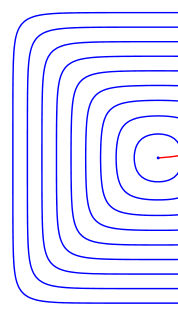
<figcaption class="paper-figure-caption"><b>Fig 5.</b> Figure 6: Some level lines of f and the path λ 7→hλ(v) of Lemma 2.4 in the case of the simple random walk (that is, Φ(γ) ≡0) and v = (cos(π/40), sin(π/40)).</figcaption>
</figure>
</div>

<p><strong>Summary.</strong> This paper rigorously determines the macroscopic shape adopted by self-repelling polymers under a constant external force field. It achieves this by solving an equivalent variational problem, showing that the optimal geometry is governed by a geodesic defined by a height-dependent Finsler metric. The results provide quantitative predictions for different field strengths, bridging classical physics (catenaries) with lattice constraints.</p>
<p><strong>Why it may be interesting.</strong> While focused on classical polymer physics, the mathematical machinery—using Finsler metrics derived from statistical mechanics potentials to determine optimal paths—is highly relevant for understanding effective Hamiltonians in complex many-body systems or quantum field theories where path integrals are involved.</p>
<details>
<summary>Detailed structure</summary>
<p><strong>Main problem.</strong> The study determines the typical macroscopic geometry of self-repelling polymers subjected to a constant external force field.</p>
<p><strong>Main result.</strong> The limiting free energy is found by solving a variational problem, and the resulting macroscopic shape is characterized as a geodesic of a height-dependent Finsler metric. The analysis reveals universal limits for small (catenary) and large (polygonal) field strengths.</p>
<p><strong>Method.</strong> The authors employ advanced techniques from the calculus of variations, comparing primal and dual variational formulations to establish the unique global minimizer that governs the system's macroscopic behavior in the thermodynamic limit.</p>
<p><strong>Model / system.</strong> The model consists of self-repelling polymers on a 2D lattice (Z^2), encompassing models like the simple random walk and SAW. The system is subjected to an external constant force field, leading to path weights governed by interaction potentials and the external potential.</p>
<p><strong>Key observables.</strong> Limiting free energy density ($\Psi$), rate function ($J(v)$), macroscopic shape (geodesic $\Gamma^*$), and monomer measure concentration ($m^*$).</p>
<p><strong>Important parameters / regimes.</strong> Force field strength ($g$), fixed length/displacement constraints, and the lattice structure ($\mathbb{Z}^2$).</p>
<p><strong>Assumptions / limitations.</strong> The analysis relies heavily on establishing analytic properties of the free energy function and using techniques like coarse-graining and passing to limits in both space and time parameters.</p>
<p><strong>Figures summary.</strong> Figures illustrate simulations comparing computed geodesics to classical catenaries for small fields, and show concentration histograms confirming that empirical measures converge to the deterministic variational measure.</p>
<p><strong>Paper structure.</strong> The paper progresses by first defining thermodynamic quantities (free energy, rate function) via ensemble averages. It then tackles the core problem using primal/dual variational formulations, proving equivalence between them. Finally, it establishes the limiting free energy by bounding the partition function from above and below using coarse-graining techniques.</p>
</details>
<details>
<summary>Abstract</summary>
<p>We study a general class of self-repelling polymers on $\mathbb Z^2$, including the simple random walk, the self-avoiding walk and the repulsive Domb-Joyce model, in the presence of a constant force field acting on each monomer. Conditioning the polymer to have fixed length and fixed endpoints, we identify the limiting free energy and prove that typical trajectories concentrate exponentially near a deterministic macroscopic shape. This shape is characterized as the unique minimizer of a variational problem and can be interpreted as a geodesic of a height-dependent Finsler metric. We also analyze two limiting regimes with universal features: for small field strength, in the symmetric case, the geodesic is close to a classical catenary, while for large field strength it converges to a universal polygonal shape governed by the nearest-neighbor lattice constraint.</p>
</details>
<p><sub><a href="#top">↑ back to top</a></sub></p>

<p><a id="paper-2606.24559"></a></p>
<h3 id="electrical-circuit-simulation-of-the-uhlmann-phase"><a href="http://arxiv.org/abs/2606.24559v1">Electrical-Circuit Simulation of the Uhlmann Phase</a></h3>
<p><strong>Authors:</strong> Yu-Huan Huang, Yu Wang, Jia-Chen Tang, Xu-Yang Hou, Hao Guo<br>
<strong>Type:</strong> both · <strong>Category:</strong> other · <strong>PDF:</strong> <a href="https://arxiv.org/pdf/2606.24559v1">https://arxiv.org/pdf/2606.24559v1</a><br>
<strong>Analysis basis:</strong> full PDF text, analyzed in chunks
<strong>Topic relevance:</strong> <code>analog quantum simulation</code> <strong>3/5</strong> · <code>driven-dissipative phase transition</code> <strong>2/5</strong> · <code>non-equilibrium dynamics</code> <strong>2/5</strong> · <code>correlated / nonlocal dissipation</code> <strong>1/5</strong> · <code>entanglement &amp; information structure</code> <strong>1/5</strong> · <code>methods for driven-dissipative</code> <strong>1/5</strong> · <code>non-equilibrium universality</code> <strong>1/5</strong></p>
<div class="figure-strip-hint">↔ Scroll figures horizontally</div>
<div class="paper-figures-scroll">
<figure class="paper-figure-card">
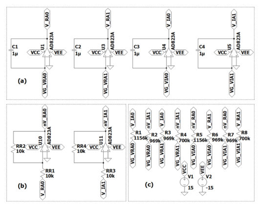
<figcaption class="paper-figure-caption"><b>Fig 1.</b> Figure 1: Circuit implementation of block A for r = 0.9. (a) Four inverting integrators representing the dynamical vari- ables ˜V A0 R , ˜V A0 I , ˜V A1 R , and ˜V A1 I . (b) Unity-gain inverting amplifiers used for positive-coupling branches. (c) Resistive coupling network and ±15 V power supply configuration. The resistor values are taken from Table I for r = 0.9. All oper- ational amplifiers are AD823A devices with a feedback ca- pacitance of 1 µF. Identical labels (e.g., VG VRA0) indicate electrically connected nodes.</figcaption>
</figure>
<figure class="paper-figure-card">
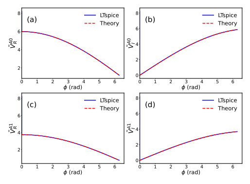
<figcaption class="paper-figure-caption"><b>Fig 2.</b> Figure 2: Comparison between LTspice simulations and the- oretical predictions for the four state variables in block A at r = 0.9. Blue solid lines: circuit simulation; red dashed lines: theory.</figcaption>
</figure>
<figure class="paper-figure-card">
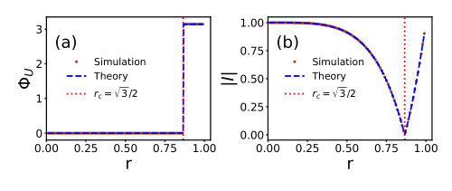
<figcaption class="paper-figure-caption"><b>Fig 3.</b> Figure 3: (a) Uhlmann geometric phase ΦU as a function of r. (b) Normalized overlap magnitude |I| as a function of r. Circles denote LTspice simulation results; dashed lines are the theoretical predictions.</figcaption>
</figure>
</div>

<p><strong>Summary.</strong> The paper develops a method to simulate the Uhlmann geometric phase—a concept describing geometry in mixed quantum states—using only classical electrical circuits. By mapping the complex quantum evolution onto an admittance matrix, the authors designed and simulated an active RC network that accurately reproduces the phase's topological transition at a critical purity value.</p>
<p><strong>Why it may be interesting.</strong> This work is highly relevant as it bridges abstract concepts from quantum information theory (geometric phases in mixed states) with tangible, classical experimental hardware (RC circuits), providing a novel platform for testing fundamental physics principles outside traditional quantum optics setups.</p>
<details>
<summary>Detailed structure</summary>
<p><strong>Main problem.</strong> The goal is to find a simple, accessible physical platform—specifically classical electrical circuits—to simulate the complex dynamics associated with the Uhlmann geometric phase for mixed quantum states.</p>
<p><strong>Main result.</strong> The authors successfully mapped the abstract Uhlmann evolution onto an active RC circuit network, demonstrating that this classical system faithfully reproduces both the local dynamics and the global topological transition of the mixed-state geometric phase.</p>
<p><strong>Method.</strong> The theoretical framework involved reformulating the Uhlmann parallel-transport condition into a linear differential equation, which was then transformed into a time-independent, real-valued dynamical matrix suitable for circuit implementation.</p>
<p><strong>Model / system.</strong> The system models mixed quantum states governed by density matrices ($
ho$) and their evolution under the Uhlmann condition. The physical realization uses an active RC network built from multi-input inverting integrators and resistors to emulate the required linear dynamics.</p>
<p><strong>Key observables.</strong> The primary observable is the Uhlmann geometric phase ($\Phi_U$), calculated via the argument of the normalized overlap ($I$) between initial and final states. The magnitude $|I|$ also shows a critical dip.</p>
<p><strong>Important parameters / regimes.</strong> The purity parameter $r$ controls the dynamics, with a critical transition occurring at $r_c = \sqrt{3}/2$.</p>
<p><strong>Assumptions / limitations.</strong> The derivation assumes that the complex Uhlmann dynamics can be recast into a real-valued system via rotating-frame transformations and subsequent decomposition suitable for analog circuit implementation.</p>
<p><strong>Figures summary.</strong> Figures compare LTspice simulations (blue solid) against exact theoretical solutions (red dashed), showing how the measured phase $\Phi_U$ jumps from zero to $\pi$ at the critical purity $r_c$.</p>
<p><strong>Paper structure.</strong> The paper progresses by first reformulating the abstract quantum dynamics into a linear matrix form, then applying transformations (rotating frame, real decomposition) to yield a time-independent generator ($M_8$), and finally detailing the mapping of this matrix onto specific components of an active RC circuit for simulation.</p>
</details>
<details>
<summary>Abstract</summary>
<p>The Uhlmann phase extends the concept of geometric phases to mixed quantum states through a parallel-transport condition on purification amplitudes, but its experimental realization has so far required sophisticated quantum platforms with carefully engineered auxiliary degrees of freedom. In this work, we reformulate the Uhlmann parallel-transport condition as a linear matrix differential equation and vectorize it to obtain an effective dynamical generator. This generator can be directly mapped onto the admittance matrix of a classical RC circuit, thereby translating the Uhlmann dynamics into the evolution of circuit node voltages. We illustrate the mapping using the equatorial-loop model and, via a rotating-frame transformation followed by a real decomposition, derive a time-independent, real-valued dynamical system suitable for analog implementation. LTspice simulations of the resulting active RC network faithfully reproduce the Uhlmann geometric phase and its topological transition at the critical purity, demonstrating that classical electrical circuits offer a simple and accessible platform for probing mixed-state geometric phases.</p>
</details>
<p><sub><a href="#top">↑ back to top</a></sub></p>

<p><a id="paper-2606.24809"></a></p>
<h3 id="optical-mapping-of-phases-and-phase-boundaries-in-nanoconfined-fluids"><a href="http://arxiv.org/abs/2606.24809v1">Optical mapping of phases and phase boundaries in nanoconfined fluids</a></h3>
<p><strong>Authors:</strong> Lauriane Pierrot Deseilligny, Susan Perkin<br>
<strong>Type:</strong> experiment · <strong>Category:</strong> statistical mechanics · <strong>PDF:</strong> <a href="https://arxiv.org/pdf/2606.24809v1">https://arxiv.org/pdf/2606.24809v1</a><br>
<strong>Analysis basis:</strong> full PDF text, analyzed in chunks
<strong>Topic relevance:</strong> <code>non-equilibrium dynamics</code> <strong>3/5</strong> · <code>non-equilibrium universality</code> <strong>3/5</strong> · <code>driven-dissipative phase transition</code> <strong>2/5</strong> · <code>Frenkel-Kontorova</code> <strong>1/5</strong> · <code>interference shaping light</code> <strong>1/5</strong> · <code>quantum measurements</code> <strong>1/5</strong></p>
<div class="figure-strip-hint">↔ Scroll figures horizontally</div>
<div class="paper-figures-scroll">
<figure class="paper-figure-card">
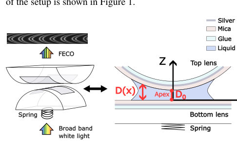
<figcaption class="paper-figure-caption"><b>Fig 1.</b> FIG. 1. Schematic of the SFB. White light passes through the inter- ferometric cavity built from the crossed-cylinders coated with back- silvered mica. The emerging light is composed of the wavelengths that resonate with the different separations imposed by the cavity. After passing through a spectrometer, the constructive interference emerges as fringes of equal chromatic order (FECO). Under the Der- jaguin approximation, the crossed-cylinder geometry is treated as an equivalent sphere-plane geometry. A view from a lateral section is provided on the right, to illustrate the sphere-plane equivalence and to introduce the coordinate system.</figcaption>
</figure>
<figure class="paper-figure-card">

<figcaption class="paper-figure-caption"><b>Fig 2.</b> FIG. 2. Example FECO interferograms corresponding to different values of the apex separation D0 as indicated on the right. Each interferogram spans a wavelength range encompassing four fringes, each of which is composed of a doublet arising from the mica bire- fringence. The measured interference appears white, while the fitted centre of mass of each doublet is shown in colour superimposed on the measured data. We denote the wavelength of fringe with order p as function λ D(x) p . Vertical lines indicate the apex wavelength of each</figcaption>
</figure>
<figure class="paper-figure-card">

<figcaption class="paper-figure-caption"><b>Fig 3.</b> FIG. 3. Graphical solution to equations 5 and 6 applied to the con- tact interferogram (D0 = 0) from figure 2 in order to estimate the optical path length δ(D) and the mean refractive index µD l for all lateral positions x. Since the interferogram contains four fringes, for each lateral position x, three curves can be calculated: f D 2k−1(n), f D 2k(n), f D 2k+1(n), shown in pink (odd index) and blue (even index). Thus, for this interferogram, there are two intersections defined for each x (shown as dark and light pink points). From the intersections we can compute estimations of the optical path δ(D(x)) and the re- fractive index n(x) at each given lateral position x.</figcaption>
</figure>
<figure class="paper-figure-card">

<figcaption class="paper-figure-caption"><b>Fig 4.</b> FIG. 4. (a) Refractive index and separation profiles in air extracted from the intercepts as in figure 3, applied to different apex separations which are indicated by the minima of the D(x,D0) curves (D(i) 0 = 0.5 nm, D(ii) 0 = 6.0 nm, D(iii) 0 = 41.7 nm, D(iv) 0 = 95.4 nm). In (b) the same data is plotted as refractive index vs. separation for each of the four D0 values (four interferograms).</figcaption>
</figure>
<figure class="paper-figure-card">

<figcaption class="paper-figure-caption"><b>Fig 5.</b> FIG. 5. Schematic of the model evolution of e(x) and the associ- ated refractive index profile as a function of separation D(x). The curves and the cartoons (i), (ii), (iii), and (iv) are in direct correspon- dence with the four curves from figure 4, corresponding to the apex D(i) 0 ,D(ii) 0 ,D(iii) 0 ,D(iv) 0 . From cartoon (iv) to (iii) and (ii), the water film thickens and spreads, reflected by an increase in parameters E0 and n0 of equation 9. Cartoon (i) illustrates the situation where the films of each surface have bridged. The overall thickness 2e(x) is therefore bound by D(x).</figcaption>
</figure>
</div>

<p><strong>Summary.</strong> This work introduces a novel optical technique using Surface Force Balance interferometry to map composition and track interfaces within nanoconfined liquids. By analyzing refractive index profiles during controlled evaporation, the authors successfully characterize meniscus geometry changes as the system transitions from surface tension control to strong confinement effects. This method provides a powerful tool for quantifying interfacial thermodynamics at the nanoscale.</p>
<p><strong>Why it may be interesting.</strong> While primarily experimental, the quantitative analysis of phase transitions and crossover regimes under extreme confinement provides valuable data for developing theoretical models in non-equilibrium statistical mechanics and interface physics.</p>
<details>
<summary>Detailed structure</summary>
<p><strong>Main problem.</strong> To develop a non-invasive method for nanoscale composition mapping and characterizing phase boundaries in nanoconfined liquids.</p>
<p><strong>Main result.</strong> The technique successfully tracks the time evolution of meniscus geometry during liquid evaporation, revealing a crossover from surface tension-dominated to confinement-dominated regimes at small separations.</p>
<p><strong>Method.</strong> It utilizes Surface Force Balance (SFB) combined with multiple beam interferometry analysis to reconstruct spatially resolved refractive index profiles within confined fluids.</p>
<p><strong>Model / system.</strong> The study focuses on liquid confinement between mica surfaces, analyzing the meniscus geometry during dynamic evaporation of a heptane droplet. The method allows for composition profiling by mapping variations in the effective film thickness and refractive index.</p>
<p><strong>Key observables.</strong> Refractive index profiles ($\mu(x)$), mean refractive index ($\mu_D$), effective film thickness ($e_{eff}$), meniscus geometry (catenoid vs. quartic fit), and evaporation rate ($    ext{-}dV/dt$).</p>
<p><strong>Important parameters / regimes.</strong> Nanoscale separations (down to $\approx 10$ nm height), surface tension effects, confinement-induced composition variations.</p>
<p><strong>Assumptions / limitations.</strong> The analysis relies on fitting interference fringes derived from the crossed-cylinder geometry and assumes local uniformity of properties for certain model simplifications.</p>
<p><strong>Figures summary.</strong> Figures illustrate SFB setups, interferograms showing fringe patterns, calculated refractive index profiles ($\mu(x)$ vs. $D_0$), and time evolution plots comparing catenoid fits to observed meniscus geometries during evaporation.</p>
<p><strong>Paper structure.</strong> The paper details the methodology for optical mapping using TLI/SFB, applies it first to air calibration (detecting wetting capillaries), then uses it to track dynamic liquid evaporation, analyzing geometric crossovers and quantifying interfacial thermodynamic effects.</p>
</details>
<details>
<summary>Abstract</summary>
<p>In confined space, deviations from bulk structure and properties are expected due to additional thermodynamic variables. In particular, composition variations arising from surface interactions may lead to additional phases and altered phase transitions. Here, we introduce a non-invasive method for nanoscale composition mapping in confined liquids using the surface force balance (SFB). The method extends conventional SFB analysis from apex measurements to spatially resolved reconstruction of refractive index profiles within confined fluids. When multiple phases are present, the refractive index profiles provide direct access to the position and geometry of the nanoconfined fluid interfaces. We describe the interferogram analysis in detail and establish its range of validity through two model scenarios. First, measurements in air demonstrate the precision of the method and allow detection of a nanometric wetting capillary. Second, we analyse dynamic evaporation of a confined heptane droplet down to 0.1 pL volume. The method provides a time-resolved reconstruction of the meniscus geometry throughout the evaporation process. Although evaporation continuously drives the system out of equilibrium, the meniscus remains well described by a catenoidal geometry down to heights of approximately 80 nm. At smaller separations, systematic deviations from the catenoidal profile emerge, indicating a crossover from a surface tension-dominated regime to a confinement-dominated regime. Overall, we demonstrate composition profiling as a framework to analyse confinement-induced composition variations and to quantify interfacial thermodynamic effects at the nanoscale.</p>
</details>
<p><sub><a href="#top">↑ back to top</a></sub></p>

<p><a id="paper-2606.24723"></a></p>
<h3 id="rotational-vacuum-friction-of-nonabsorbing-particles"><a href="http://arxiv.org/abs/2606.24723v1">Rotational Vacuum Friction of Nonabsorbing Particles</a></h3>
<p><strong>Authors:</strong> F. Javier García de Abajo, Alejandro Manjavacas<br>
<strong>Type:</strong> theory · <strong>Category:</strong> other · <strong>PDF:</strong> <a href="https://arxiv.org/pdf/2606.24723v1">https://arxiv.org/pdf/2606.24723v1</a><br>
<strong>Analysis basis:</strong> full PDF text, analyzed in chunks
<strong>Topic relevance:</strong> <code>Keldysh / 2PI / non-Gaussian methods</code> <strong>3/5</strong> · <code>driven-dissipative phase transition</code> <strong>2/5</strong> · <code>non-equilibrium dynamics</code> <strong>2/5</strong> · <code>Frenkel-Kontorova</code> <strong>1/5</strong> · <code>correlated / nonlocal dissipation</code> <strong>1/5</strong> · <code>methods for driven-dissipative</code> <strong>1/5</strong> · <code>non-equilibrium universality</code> <strong>1/5</strong></p>
<div class="figure-strip-hint">↔ Scroll figures horizontally</div>
<div class="paper-figures-scroll">
<figure class="paper-figure-card">

<figcaption class="paper-figure-caption"><b>Fig 1.</b> FIG. 1. A small nonabsorbing asymmetric particle rotates about the z axis with angular velocity Ω. The particle can lose angular momentum through two-photon emission (2PE), two-photon absorption (2PA), and photon scattering (PS), all of which contribute to rotational friction. In particular, 2PE can occur at zero vacuum temperature, whereas 2PA and PS require a finite thermal photon population.</figcaption>
</figure>
<figure class="paper-figure-card">

<figcaption class="paper-figure-caption"><b>Fig 2.</b> FIG. 3. Absolute strength of rotational vacuum friction in a nonabsorbing asymmetric particle. We plot the frictional torque as a function of rotation frequency Ωfor a prolate diamond ellipsoid with semi-axes of 100 nm and 76 nm at dif- ferent vacuum temperatures T0 (see labels). The vertical and horizontal dashed lines indicate the fastest mechanical rota- tion reported to date (Ω/2π = 6 GHz [48]) and the measured torque sensitivity in levitated nanorotors (∼1 × 10−27 N m [49]), respectively.</figcaption>
</figure>
<figure class="paper-figure-card">

<figcaption class="paper-figure-caption"><b>Fig 3.</b> FIG. 2. Temperature and velocity dependence of rotational friction in nonabsorbing particles. We show different con- tributions to the torque Ms arising from the processes de- picted in Fig. 1 and dependent only on the θ0/Ωratio, where θ0 = 2πkBT0/ℏis the thermal frequency. The s = PS contri- bution is separated into terms associated with ±ℏmomentum transfers. The total torque (gray curve) is compared with the high- and low-temperature limits (broken curves).</figcaption>
</figure>
</div>

<p><strong>Summary.</strong> This theoretical paper develops a quantum electrodynamics framework to calculate vacuum friction torque on rotating particles. It shows that this torque depends critically on particle symmetry and temperature, yielding distinct power-law scalings ($\Omega^7$ vs linear $\Omega$) depending on the thermal regime. The findings highlight fundamental symmetries protecting certain geometries from vacuum dissipation.</p>
<p><strong>Why it may be interesting.</strong> This work directly addresses open quantum systems dynamics by quantifying dissipation mechanisms (vacuum friction) that couple mechanical rotation to the zero-point energy of the electromagnetic field, which is a key area in advanced AMO physics and quantum optics.</p>
<details>
<summary>Detailed structure</summary>
<p><strong>Main problem.</strong> The research develops a quantum theory to calculate the rotational vacuum friction torque exerted on small, nonabsorbing particles rotating in a vacuum.</p>
<p><strong>Main result.</strong> The calculated torque exhibits strong dependence on particle symmetry and temperature; for anisotropic particles at zero temperature, the torque scales as $\Omega^7$, while axisymmetric particles are protected from this type of photon-assisted friction.</p>
<p><strong>Method.</strong> The calculation relies on applying Fermi's golden rule to second-order processes (two-photon emission/absorption) derived from an electric-dipole interaction Hamiltonian coupling particle excitations and rotation to the quantized electromagnetic vacuum field.</p>
<p><strong>Model / system.</strong> The system is a small, nonabsorbing particle with internal bosonic excitations ($\epsilon_j$) undergoing rotation ($\Omega$) in a vacuum at temperature $T_0$. The analysis uses quantum electrodynamics principles applied to rotational dynamics.</p>
<p><strong>Key observables.</strong> Rotational friction torque ($M$), absorbed power ($P_{abs}$), and the scaling of these quantities with $\Omega$ and $T_0$.</p>
<p><strong>Important parameters / regimes.</strong> Rotation frequency ($\Omega$), temperature ($T_0$) characterized by $  heta_0$, internal excitation gap ($\epsilon_g$), and particle anisotropy/symmetry.</p>
<p><strong>Assumptions / limitations.</strong> The particle is nonabsorbing (real polarizability); approximations are made regarding the relative magnitudes of $\Omega, 	heta_0,$ and $\epsilon_g$ to simplify the calculation into distinct temperature regimes.</p>
<p><strong>Figures summary.</strong> Figures illustrate the contributing physical processes (2PE, 2PA, PS) and plot the calculated absolute strength of rotational vacuum friction versus rotation frequency for various temperatures and particle shapes.</p>
<p><strong>Paper structure.</strong> The paper builds from defining the interaction Hamiltonian and applying Fermi's golden rule to calculate transition rates. It then derives general expressions for the torque in terms of temperature-dependent sums, simplifying these into distinct asymptotic limits ($\Omega^7$ at low $T$, linear $\Omega$ at high $T$), and finally analyzing symmetry protection.</p>
</details>
<details>
<summary>Abstract</summary>
<p>A nonabsorbing particle rotating in vacuum can lose angular momentum only by converting mechanical energy into electromagnetic radiation. Here, we develop a quantum theory of rotational vacuum friction for small lossless particles and show that axial symmetry qualitatively changes the leading dissipation channel. At zero temperature, the frictional torque scales as $M\proptoΩ^7$ with rotation frequency $\ Omega$ in anisotropic particles due to the emission of correlated photon pairs whose frequencies sum to $2Ω$, while a contribution to the torque linear in $\ Omega$ is found at finite temperature. In contrast, axisymmetric particles are protected against photon-assisted friction regardless of temperature.</p>
</details>
<p><sub><a href="#top">↑ back to top</a></sub></p>

<p><a id="paper-2606.24804"></a></p>
<h3 id="thz-induced-phonon-mode-mixing-and-collective-dynamics-in-a-polar-nanolattice"><a href="http://arxiv.org/abs/2606.24804v1">THz-induced phonon mode mixing and collective dynamics in a polar nanolattice</a></h3>
<p><strong>Authors:</strong> Elizabeth Skoropata, Peter M. Derlet, Hiroki Ueda, Roman Mankowsky, Mathias Sander, Henrik T. Lemke, Rafael T. Winkler, Yunpei Deng, Milan Radovic, Matteo Savoini, Biaolong Liu, Martina Basini, Vladimir Ovuka, Steven L. Johnson, Marta D. Rossell, Urs Staub<br>
<strong>Type:</strong> both · <strong>Category:</strong> other · <strong>PDF:</strong> <a href="https://arxiv.org/pdf/2606.24804v1">https://arxiv.org/pdf/2606.24804v1</a><br>
<strong>Analysis basis:</strong> full PDF text, analyzed in chunks
<strong>Topic relevance:</strong> <code>non-equilibrium dynamics</code> <strong>3/5</strong> · <code>driven-dissipative phase transition</code> <strong>2/5</strong> · <code>non-equilibrium universality</code> <strong>2/5</strong> · <code>Frenkel-Kontorova</code> <strong>1/5</strong> · <code>Keldysh / 2PI / non-Gaussian methods</code> <strong>1/5</strong> · <code>analog quantum simulation</code> <strong>1/5</strong> · <code>methods for driven-dissipative</code> <strong>1/5</strong></p>
<div class="figure-strip-hint">↔ Scroll figures horizontally</div>
<div class="paper-figures-scroll">
<figure class="paper-figure-card">

<figcaption class="paper-figure-caption"><b>Fig 1.</b> Fig. 1: Collective modes created in a polar nanostructure: a Cross-sectional scanning trans-</figcaption>
</figure>
<figure class="paper-figure-card">

<figcaption class="paper-figure-caption"><b>Fig 2.</b> Fig. 2: Time-dependent changes of structure and polarization in 2- and 3-dimensional</figcaption>
</figure>
<figure class="paper-figure-card">

<figcaption class="paper-figure-caption"><b>Fig 3.</b> Fig. 3: Transformation from 2-dimensional waves to 3-dimensional vortex-like displace-</figcaption>
</figure>
<figure class="paper-figure-card">

<figcaption class="paper-figure-caption"><b>Fig 4.</b> Fig. 4: Polarization and vorticity of phonon modes in nanolattice SrTiO3: 2-dimensional</figcaption>
</figure>
<figure class="paper-figure-card">

<figcaption class="paper-figure-caption"><b>Fig 5.</b> Fig. 2). The black arrows in (A, B) indicate the O2−displacement. c Fourier transform of the average</figcaption>
</figure>
</div>

<p><strong>Summary.</strong> This paper explores using nanoscale structural imperfections, specifically dislocation networks in STO thin films, to control phonon behavior. By exciting the material with THz pulses and measuring the resulting X-ray diffraction changes, the authors show that symmetry breaking generates novel collective vibrational modes. This opens a new avenue for designing functional materials by controlling their real-space topology.</p>
<p><strong>Why it may be interesting.</strong> The work demonstrates how engineered structural defects can act as powerful tuning knobs for lattice dynamics, offering an analogy to controlling quantum states or excitations by manipulating the underlying geometry of a solid-state system.</p>
<details>
<summary>Detailed structure</summary>
<p><strong>Main problem.</strong> The study investigates how controlling symmetry breaking at nanoscale interfaces, such as dislocation networks, can be used to manipulate phonon mode mixing and generate novel collective dynamics in polar materials.</p>
<p><strong>Main result.</strong> Symmetry breaking due to dislocations induces a mixture of acoustic and optical modes, leading to measurable dynamic electric polarization and the generation of previously unobserved collective THz-frequency modes.</p>
<p><strong>Method.</strong> The research combines ultrafast time-resolved X-ray diffraction (tr-XRD) experiments using THz pulses with classical molecular dynamics (MD) simulations.</p>
<p><strong>Model / system.</strong> The physical system is a Strontium Titanate ($  ext{SrTiO}_3$) thin film grown on a complex substrate, engineered to contain an ordered network of interfacial misfit dislocations. Simulations model the lattice response under strain and electric fields.</p>
<p><strong>Key observables.</strong> Transient diffraction intensity ($\Delta I/I$), out-of-plane vs. in-plane atomic displacements, dynamic electric polarization ($|P|$), and vorticity measures ($\lambda_2$).</p>
<p><strong>Important parameters / regimes.</strong> THz frequency regime (e.g., 0.060 to 0.124 THz modes); nanoscale structural features like dislocation spacing; picosecond time scales.</p>
<p><strong>Assumptions / limitations.</strong> The analysis often relies on drawing analogies from fluid dynamics concepts (helicity, $\lambda_2$) and comparing simulation results with experimental measurements despite differences in system size or boundary conditions.</p>
<p><strong>Figures summary.</strong> Figures show STEM images of dislocation networks, time-resolved XRD intensity changes at Bragg/satellite reflections, simulated atomic displacement patterns comparing pristine vs. dislocated films, and FFT spectra confirming mode mixing.</p>
<p><strong>Paper structure.</strong> The paper progresses by first establishing the experimental setup (tr-XRD on STO/dislocations), presenting key findings regarding symmetry breaking effects observed in diffraction data, supporting these results with detailed MD simulations, and concluding with a generalized pathway for controlling dynamical functional properties via real-space topology.</p>
</details>
<details>
<summary>Abstract</summary>
<p>Manipulating phonons through symmetry is a fundamental approach to alter the dynamic responses of materials. Most often new phases are sought through control of the unit-cell (e.g. via strain, doping, light, etc.). By comparison, there is vast potential to look beyond the unit-cell into higher-order architectures to control wave scattering and interference effects that remains less explored. We describe the THz-induced dynamics of an SrTiO$_{3}$ thin film with a nanoscale ordered interfacial dislocation network probed with 2- and 3-dimensional time-resolved x-ray diffraction and classical molecular dynamics simulations. We find that symmetry breaking at all scales is an effective approach to create a dynamical electric polarization and to control phonon mixing that generates previously unreported collective modes in the THz regime with circular vortex-like displacements. This work opens a new pathway to explore dynamical functional properties that can be extended to magnetic, electric, and ferroelectric systems by controlling the real-space topology via epitaxy.</p>
</details>
<p><sub><a href="#top">↑ back to top</a></sub></p>

<p><a id="paper-2606.24720"></a></p>
<h3 id="on-the-localization-transition-from-maa-to-aa-models"><a href="http://arxiv.org/abs/2606.24720v1">On the localization transition from MAA to AA models</a></h3>
<p><strong>Authors:</strong> Hangdong Qiu, Yunhua Wang<br>
<strong>Type:</strong> theory · <strong>Category:</strong> disordered systems and neural networks · <strong>PDF:</strong> <a href="https://arxiv.org/pdf/2606.24720v1">https://arxiv.org/pdf/2606.24720v1</a><br>
<strong>Analysis basis:</strong> full PDF text, analyzed in chunks
<strong>Topic relevance:</strong> <code>Frenkel-Kontorova</code> <strong>3/5</strong> · <code>analog quantum simulation</code> <strong>2/5</strong> · <code>driven-dissipative phase transition</code> <strong>2/5</strong> · <code>methods for driven-dissipative</code> <strong>1/5</strong> · <code>non-equilibrium dynamics</code> <strong>1/5</strong> · <code>non-equilibrium universality</code> <strong>1/5</strong></p>
<div class="figure-strip-hint">↔ Scroll figures horizontally</div>
<div class="paper-figures-scroll">
<figure class="paper-figure-card">

<figcaption class="paper-figure-caption"><b>Fig 1.</b> FIG. 1. Double quasiperiodic potentials Vj(β) in Eq. (2) for β = 0, 0.25, 0.5, 0.75, and 1, respectively. Blue dots represent the potential on even lattice sites, and red dots represent the potential on odd lattice sites.</figcaption>
</figure>
<figure class="paper-figure-card">

<figcaption class="paper-figure-caption"><b>Fig 2.</b> FIG. 2. (a)-(f) Fractal dimension Q of eigenstates as a function of eigenenergy En and quasiperiodic potential strength λ for β = 0, 0.2, 0.4, 0.6, 0.8, and 1, respectively, with system size L = 1220. The two black dashed lines in panel (a) represent the MEs of MAA model.</figcaption>
</figure>
<figure class="paper-figure-card">

<figcaption class="paper-figure-caption"><b>Fig 3.</b> FIG. 3. (a)-(f) Fractal dimension Q of all eigenstates as a function of En and β for λ = 1.5, 1.9, 2, 2.2, 2.5, and 3, respectively, with system size L = 1220. Along the arrows in (b), these eigenstates undergo multiple localization transitions with increasing β.</figcaption>
</figure>
<figure class="paper-figure-card">

<figcaption class="paper-figure-caption"><b>Fig 4.</b> FIG. 4. The IPR and NPR as functions of β in (a) for the 200th eigenstate in Fig. 3(a) with λ = 1.5, and in (b)-(f) for the 410th eigenstate in Figs. 3(b)- 3(f) with λ = 1.9, 2, 2.2, 2.5, and 3, respectively. These vertical dashed lines in (c) specify β = 0, 0.215, 0.538, 0.761, and 0.884, where the wavefunctions of the 410th eigenstate are correspondingly plotted in Fig. 5.</figcaption>
</figure>
<figure class="paper-figure-card">

<figcaption class="paper-figure-caption"><b>Fig 5.</b> Fig. 5(g). Next, we summarize our main findings on the local- ization transition features from the MAA to AA mod- els via the phase diagrams characterized by the frac- tal dimension Q with respect to β and λ, as shown in Figs. 6(a) - 6(c). We select the 200th and 410th eigen- states to discuss localization transitions of high-energy eigenstates, and take the 610th eigenstate representing the states near zero energy. The fractal dimension Q of the 200th, 410th and 610th eigenstates as a function of β and λ are shown in Figs. 6(a) - 6(c), respectively. For high-energy eigenstates, a single localization transition can emerge but only at λ &lt; 2 as shown in Fig. 6(a), multiple localization...</figcaption>
</figure>
</div>

<p><strong>Summary.</strong> This paper introduces the Double Quasiperiodic MAA (DMAA) model to study the transition from MAA to AA type quasiperiodic potentials. By analyzing diagnostic quantities like IPR and fractal dimension, the authors demonstrate that this evolution reveals multiple localization-delocalization transitions not present in simpler models. The findings are validated using both numerical simulations and continuum models relevant for experimental platforms.</p>
<p><strong>Why it may be interesting.</strong> It provides a detailed theoretical framework for understanding how the nature of localization transitions changes when moving between two closely related quasiperiodic models, which has implications for disordered quantum systems in photonics or cold atoms.</p>
<details>
<summary>Detailed structure</summary>
<p><strong>Main problem.</strong> The study aims to reveal how localization transitions evolve when moving from Mosaic Aubry-André (MAA) models to standard Aubry-André (AA) models.</p>
<p><strong>Main result.</strong> The Double Quasiperiodic MAA (DMAA) model exhibits new twice and multiple localization-delocalization transitions, which are absent in the original AA model.</p>
<p><strong>Method.</strong> Numerical calculations were performed using diagnostic quantities like Inverse Participation Ratio (IPR), Normalized Participation Ratio (NPR), and Fractal Dimension ($Q$) on both tight-binding and continuum models.</p>
<p><strong>Model / system.</strong> The Double Quasiperiodic MAA (DMAA) model is a one-dimensional chain governed by a Hamiltonian with double quasiperiodic on-site potentials. The transition between MAA ($eta=0$) and AA ($eta=1$) is controlled by the tunable amplitude factor $eta$.</p>
<p><strong>Key observables.</strong> Inverse Participation Ratio (IPR), Normalized Participation Ratio (NPR), Fractal Dimension ($Q$), and real-space wavefunction distribution.</p>
<p><strong>Important parameters / regimes.</strong> Potential strength ($\lambda$), tuning parameter ($eta \in [0, 1]$), and energy ($E_n$).</p>
<p><strong>Assumptions / limitations.</strong> The analysis relies on the DMAA model providing a continuous framework to study the transition between MAA and AA models.</p>
<p><strong>Figures summary.</strong> Figures show $Q$ vs. energy for varying $eta$, confirming Mobility Edges in MAA but not AA; other figures plot IPR/NPR changes demonstrating multiple transitions at specific parameter regimes.</p>
<p><strong>Paper structure.</strong> The paper develops the DMAA model, analyzes its behavior across different disorder strengths ($\lambda$) and tuning parameters ($eta$), uses various diagnostic tools (IPR, NPR, Q), and validates findings by comparing tight-binding results with continuum simulations applicable to polariton modes.</p>
</details>
<details>
<summary>Abstract</summary>
<p>Despite their potential similarity between the mosaic Aubry-André (MAA) and AA models, the MAA model allows mobility edges (MEs), whereas the AA model does not. Here we develop a new double quasiperiodic MAA (DMAA) model consisting of one primitive MAA with nonzero even-site potentials and the other modified one with both nonzero odd-site potentials and a tunable amplitude factor, to reveal how localization transitions evolve from MAA to AA models. Interplays and competitions among the extended, critical and localized states arising from superpositions of double quasi-periodic MAA potentials enable new twice and multiple localization-delocalization transitions besides the original single localization transition. Our numerical calculations on inverse participation ratio, normalized participation ratio, fractal dimension and real-space wavefunction distribution confirm such localization features. The continuum model simulations on the experimental polariton modes also yield consistent results and hence validate their experimental feasibility. The constructed DMAA model provides a new framework for studying the localization transition processes between two analogous quasiperiodic models and broadens the understanding of Anderson localization.</p>
</details>
<p><sub><a href="#top">↑ back to top</a></sub></p>

<p><a id="paper-2606.24334"></a></p>
<h3 id="wigners-phase-space-current-for-variable-beam-splitters-phase-space-rotations-and-newtonian-trajectories"><a href="http://arxiv.org/abs/2606.24334v1">Wigner's Phase Space Current for Variable Beam Splitters -- Phase Space Rotations and Newtonian Trajectories</a></h3>
<p><strong>Authors:</strong> Ole Steuernagel, Hsien-Yi Hsieh, Hua-Li Chen, Ray-Kuang Lee<br>
<strong>Type:</strong> theory · <strong>Category:</strong> other · <strong>PDF:</strong> <a href="https://arxiv.org/pdf/2606.24334v1">https://arxiv.org/pdf/2606.24334v1</a><br>
<strong>Analysis basis:</strong> full PDF text, analyzed in chunks
<strong>Topic relevance:</strong> <code>methods for driven-dissipative</code> <strong>3/5</strong> · <code>non-equilibrium dynamics</code> <strong>2/5</strong> · <code>Keldysh / 2PI / non-Gaussian methods</code> <strong>1/5</strong> · <code>analog quantum simulation</code> <strong>1/5</strong> · <code>correlated / nonlocal dissipation</code> <strong>1/5</strong> · <code>driven-dissipative phase transition</code> <strong>1/5</strong> · <code>quantum measurements</code> <strong>1/5</strong></p>
<div class="figure-strip-hint">↔ Scroll figures horizontally</div>
<div class="paper-figures-scroll">
<figure class="paper-figure-card">

<figcaption class="paper-figure-caption"><b>Fig 1.</b> Low-resolution page preview, page 2</figcaption>
</figure>
<figure class="paper-figure-card">

<figcaption class="paper-figure-caption"><b>Fig 2.</b> Low-resolution page preview, page 3</figcaption>
</figure>
<figure class="paper-figure-card">

<figcaption class="paper-figure-caption"><b>Fig 3.</b> Low-resolution page preview, page 4</figcaption>
</figure>
<figure class="paper-figure-card">

<figcaption class="paper-figure-caption"><b>Fig 4.</b> Low-resolution page preview, page 5</figcaption>
</figure>
<figure class="paper-figure-card">

<figcaption class="paper-figure-caption"><b>Fig 5.</b> Low-resolution page preview, page 6</figcaption>
</figure>
</div>

<p><strong>Summary.</strong> This paper analyzes how two coupled quantum modes interact through a variable beam splitter by mapping the evolution onto Wigner's phase space. By deriving the corresponding current, the authors demonstrate that this complex quantum mixing process simplifies mathematically to independent classical rotations in position and momentum spaces. This provides deep geometrical insights into mode mixing dynamics.</p>
<p><strong>Why it may be interesting.</strong> This work provides a powerful geometrical interpretation (rotation) for mode mixing in quantum optics using phase-space methods, which is highly relevant for understanding open quantum systems and linear optical elements.</p>
<details>
<summary>Detailed structure</summary>
<p><strong>Main problem.</strong> The study focuses on analyzing the strongly mode mixing dynamics of variable beam splitters by tracking the evolution of the Wigner distribution in phase space.</p>
<p><strong>Main result.</strong> The dynamics are shown to be equivalent to classical rotations confined separately within the position and momentum planes, allowing for explicit calculation of rotated Wigner distributions using classical trajectories.</p>
<p><strong>Method.</strong> The authors use the Wigner-transform formalism, deriving a continuity equation for the distribution whose current allows mapping quantum evolution onto classical trajectory analysis.</p>
<p><strong>Model / system.</strong> The system involves two continuous single-mode quantum systems (two optical modes) interacting via a variable beam splitter. The dynamics are governed by an effective Hamiltonian derived from the unitary beam splitter operator, analyzed in the four-dimensional phase space.</p>
<p><strong>Key observables.</strong> Wigner distribution W(r, tau) and the corresponding Wigner current J.</p>
<p><strong>Important parameters / regimes.</strong> The analysis is sensitive to the reflectivity parameters of the variable beam splitters ($\varrho$).</p>
<p><strong>Assumptions / limitations.</strong> The derivation assumes sufficiently small variations in reflectivity to utilize a continuous effective Hamiltonian approximation.</p>
<p><strong>Figures summary.</strong> Not specified, but the notes reference transformation equations (Eq. 17) describing coordinate mapping from initial to final states.</p>
<p><strong>Paper structure.</strong> The paper establishes the continuity equation for Wigner's distribution under beam splitting, derives the explicit form of the current J, and then uses this structure to show that the dynamics map onto simple classical rotations in phase space coordinates.</p>
</details>
<details>
<summary>Abstract</summary>
<p>Beam splitters allow us to superpose two continuous single mode quantum systems. To study the behaviour of beam splitters' strongly mode mixing dynamics we consider variable beam splitters acting on Wigner's phase space distribution, W , the evolution of which is governed by the continuity-equation {\partial τ} W = - {\nabla} J. We derive the form of the corresponding Wigner current, J. J's form allows us to use a classical trajectories-approach to analyze the influence of the two modes on each other. We show that the dynamics for variable beam splitters amounts to a rotation confined within the plane of the two positions together with the same simultaneous rotation confined within the plane of the two momenta. In this way explicit and very transparent expressions for the rotated Wigner distributions and Wigner currents can be given in terms of classical trajectories. This helps us to gain deeper insights and perform geometrical analyses of the mixing of modes at beam splitters.</p>
</details>
<p><sub><a href="#top">↑ back to top</a></sub></p>

<p><a id="paper-2606.24671"></a></p>
<h3 id="anderson-localization-on-the-bethe-lattice"><a href="http://arxiv.org/abs/2606.24671v1">Anderson localization on the Bethe lattice</a></h3>
<p><strong>Authors:</strong> Dafne Prado Bandeira, Angelica Vecchiarelli, Marco Tarzia<br>
<strong>Type:</strong> theory · <strong>Category:</strong> disordered systems and neural networks · <strong>PDF:</strong> <a href="https://arxiv.org/pdf/2606.24671v1">https://arxiv.org/pdf/2606.24671v1</a><br>
<strong>Analysis basis:</strong> full PDF text, analyzed in chunks
<strong>Topic relevance:</strong> <code>Keldysh / 2PI / non-Gaussian methods</code> <strong>3/5</strong> · <code>driven-dissipative phase transition</code> <strong>2/5</strong> · <code>Kondo &amp; dissipative impurity</code> <strong>1/5</strong> · <code>analog quantum simulation</code> <strong>1/5</strong> · <code>methods for driven-dissipative</code> <strong>1/5</strong> · <code>non-equilibrium dynamics</code> <strong>1/5</strong></p>
<div class="figure-strip-hint">↔ Scroll figures horizontally</div>
<div class="paper-figures-scroll">
<figure class="paper-figure-card">

<figcaption class="paper-figure-caption"><b>Fig 1.</b> Figure 1. Schematic representation of the configuration space of the spin chain (Eq. (21)) for L = 3 in the basis of the simultaneous eigenstates of the {σz i } operators. Each vertex corresponds to one of the 23 = 8 spin configurations. To each vertex, a random energy is assigned (indicated by color) containing linear combinations of the random fields hi, weighted by the spin values of that specific configuration. Edges connect configurations that differ by a single spin flip, forming a 3-dimensional hypercube structure.</figcaption>
</figure>
<figure class="paper-figure-card">

<figcaption class="paper-figure-caption"><b>Fig 2.</b> Figure 2. (Left) For a finite system, G(z) is analytic except at a discrete set of points on the real axis corresponding to the eigenvalues λn, where it exhibits simple poles. (Right) In the thermodynamic limit (N →∞), these discrete poles may merge into a continuous branch cut along the real axis. The physical Green’s functions are recovered by approaching the real axis from the complex plane through the regularization z = λ ± iη (green dots) as η →0+.</figcaption>
</figure>
<figure class="paper-figure-card">

<figcaption class="paper-figure-caption"><b>Fig 3.</b> Figure 3. Energy spectrum of the system in the extended phase. Each horizontal line represents an eigenstate at energy λn, with its oscillatory pattern indicating the spatial structure. The red marker shows that the amplitude of the wavefunction is uniformly of order O(1/N).</figcaption>
</figure>
<figure class="paper-figure-card">

<figcaption class="paper-figure-caption"><b>Fig 4.</b> Figure 4. Integrated local density of states Ri(E) in the extended phase. Both the step height (proportional to |ψn(i)|2) and the level spacing are of order O(1/N). In the thermodynamic limit, these discrete steps merge into a smooth, continuous function.</figcaption>
</figure>
<figure class="paper-figure-card">

<figcaption class="paper-figure-caption"><b>Fig 5.</b> Figure 5. Energy spectrum in the localized regime. Each eigenstate is confined to a region around its localization center. At site i, the local density of states receives significant contributions only from eigenstates whose centers lie within ∼ξ of i; distant states contribute negligibly.</figcaption>
</figure>
</div>

<p><strong>Summary.</strong> This work provides a comprehensive, pedagogical review of Anderson localization theory by focusing on the exactly solvable Bethe lattice model. It details how disorder drives a true quantum phase transition, characterizing it using advanced Green's function techniques and self-consistent equations. The paper is crucial for understanding the theoretical limits of wave propagation in disordered media.</p>
<p><strong>Why it may be interesting.</strong> The rigorous analytical treatment of a quantum phase transition using advanced Green's function techniques is highly relevant for understanding localization phenomena in open or disordered quantum systems studied in AMO physics.</p>
<details>
<summary>Detailed structure</summary>
<p><strong>Main problem.</strong> The paper investigates Anderson localization, a quantum phase transition where disorder suppresses wave propagation, by analyzing its behavior on the Bethe lattice.</p>
<p><strong>Main result.</strong> It establishes that the Bethe lattice provides an analytically tractable framework to study this transition, revealing diagnostics like spectral statistics and the divergence of correlation volumes at criticality.</p>
<p><strong>Method.</strong> The analysis relies heavily on the resolvent (Green's function) formalism and the cavity approach to derive self-consistent equations for the system's properties.</p>
<p><strong>Model / system.</strong> The primary model is the Anderson Hamiltonian applied to the Bethe lattice, which serves as an infinite-dimensional limit of disordered quantum systems. It also draws analogies to Many-Body Localization (MBL).</p>
<p><strong>Key observables.</strong> Localization length ($\xi$), full probability distribution of the local density of states, Inverse Participation Ratio (IPR), and the crossing of $\langle \ln Z 
angle$ through zero.</p>
<p><strong>Important parameters / regimes.</strong> Disorder strength ($W$) relative to hopping amplitude ($t$), connectivity/coordination number, and system dimension (comparing finite $d$ vs. infinite Bethe limit).</p>
<p><strong>Assumptions / limitations.</strong> The use of the Bethe lattice assumes an infinite-dimensional, tree-like structure, which simplifies calculations but neglects loop correlations present in real lattices.</p>
<p><strong>Figures summary.</strong> Not specified; the notes refer to general concepts like schematic representations of configuration spaces (e.g., hypercubes).</p>
<p><strong>Paper structure.</strong> The review progresses from defining Anderson localization and its diagnostics (Green's functions, IPR) to detailing the mathematical machinery (resolvent/cavity approach) used on the Bethe lattice, culminating in discussions about critical behavior and connections to DPRM.</p>
</details>
<details>
<summary>Abstract</summary>
<p>Anderson localization is a paradigmatic disorder-driven quantum phase transition in which interference effects can completely suppress wave propagation. Its formulation on the Bethe lattice -- an infinite tree with fixed coordination number -- provides a unique setting in which the transition becomes analytically tractable. Owing to its exponential volume growth, the Bethe lattice realizes the infinite-dimensional limit of the Anderson problem and also serves as a useful mean-field-like description of localization in many-body configuration spaces.   These lecture notes provide a pedagogical review of Anderson localization on the Bethe lattice, focusing on the resolvent (Green's function) formalism and the cavity approach. We discuss the main diagnostics of localization and show how they are encoded in the statistical properties of Green's functions, with the full probability distribution of the local density of states emerging as the natural order parameter of the transition. We derive the cavity self-consistent equations for the diagonal resolvent and review both their numerical solution by population dynamics and their analytical treatment in the large-connectivity limit. This framework gives access to the critical disorder and the critical behavior near the transition, including the localization length in the insulating phase and the correlation volume that controls the delocalized phase. We also discuss the connection with directed polymers in random media and its interpretation in terms of rare resonant paths and freezing phenomena.   These notes originated from a series of lectures delivered by one of the authors at the Oropa Summer School on "Fundamental Problems in Statistical Physics XVI" (July 2025).</p>
</details>
<p><sub><a href="#top">↑ back to top</a></sub></p>

<p><a id="paper-2606.24291"></a></p>
<h3 id="broadband-molecular-dynamics-simulation-of-fluid-inertial-effects-in-confined-brownian-motion"><a href="http://arxiv.org/abs/2606.24291v1">Broadband molecular dynamics simulation of fluid inertial effects in confined Brownian motion</a></h3>
<p><strong>Authors:</strong> Quentin Thomas, Clara Mefo Sop, Maxime Lavaud, Yacine Amarouchene, Thomas Salez, Pascal Damman<br>
<strong>Type:</strong> theory · <strong>Category:</strong> statistical mechanics · <strong>PDF:</strong> <a href="https://arxiv.org/pdf/2606.24291v1">https://arxiv.org/pdf/2606.24291v1</a><br>
<strong>Analysis basis:</strong> full PDF text, analyzed in chunks
<strong>Topic relevance:</strong> <code>non-equilibrium dynamics</code> <strong>3/5</strong> · <code>non-equilibrium universality</code> <strong>2/5</strong> · <code>Keldysh / 2PI / non-Gaussian methods</code> <strong>1/5</strong> · <code>correlated / nonlocal dissipation</code> <strong>1/5</strong> · <code>driven-dissipative phase transition</code> <strong>1/5</strong> · <code>methods for driven-dissipative</code> <strong>1/5</strong></p>
<div class="figure-strip-hint">↔ Scroll figures horizontally</div>
<div class="paper-figures-scroll">
<figure class="paper-figure-card">

<figcaption class="paper-figure-caption"><b>Fig 1.</b> FIG. 1. Schematic of the system. Left: instantaneous snap- shot of the MD simulation, showing the colloidal particle (blue, radius R) immersed in a dense WCA solvent (red) and confined near a frozen planar wall (yellow). Right: notations are as follows; the surface-to-surface gap ϵ, the center-to-wall distance h = ϵ + R, and the components v⊥and v∥of the colloid velocity, normal and parallel to the wall.</figcaption>
</figure>
<figure class="paper-figure-card">

<figcaption class="paper-figure-caption"><b>Fig 2.</b> FIG. 2. Diffusion in the bulk. (a) VACF Cv of a colloidal particle, of radius R = 10, in a WCA fluid, as a function of time t. Inset: MSD as a function of time in the ballistic regime. (b,c,d) Evolution with the colloid radius of the compressibility time τc, the added mass Ma estimated from the VACF, and the diffusion coefficient D. The solid lines correspond to the theoretical predictions as indicated.</figcaption>
</figure>
<figure class="paper-figure-card">

<figcaption class="paper-figure-caption"><b>Fig 3.</b> FIG. 4. (a) Normalized diffusion coefficients D∥/D0 and D⊥/D0 as functions of the normalized distance to the wall ϵ/R. Also shown are theoretical predictions as well as exper- imental results from the literature, as indicated. (b) Relative added-mass deviation, [M ∗(ϵ) −M ∗(∞)]/M ∗(∞), as a func- tion of the normalized distance to the wall ϵ/R. Also shown are theoretical predictions from the literature.</figcaption>
</figure>
<figure class="paper-figure-card">

<figcaption class="paper-figure-caption"><b>Fig 4.</b> FIG. 3. VACFs Ci as a function of time t, measured near a rigid wall. Also shown are the bulk long-time tail, t−3/2, and the confined long-time tails C∥∼t−5/2 and C⊥∼t−7/2. Theoretical curves, Eqs. 3 and 4, are added [25].</figcaption>
</figure>
</div>

<p><strong>Summary.</strong> This work uses molecular dynamics simulations to study Brownian motion near a wall, focusing on the full hydrodynamic response rather than just diffusion. The key finding is that confinement modifies fluid correlations in complex ways, simultaneously suppressing low-frequency mobility while enhancing high-frequency inertial effects. This demonstrates the power of analyzing the velocity autocorrelation function across all relevant time scales.</p>
<p><strong>Why it may be interesting.</strong> While focused on classical fluid dynamics, the rigorous treatment of time-dependent correlations ($  ext{VACF}$) across multiple dynamic regimes—from ballistic to diffusive—is a sophisticated example of non-equilibrium statistical mechanics applicable to open quantum systems where memory effects are crucial.</p>
<details>
<summary>Detailed structure</summary>
<p><strong>Main problem.</strong> To investigate how fluid confinement modifies the full hydrodynamic response of Brownian motion, moving beyond established knowledge of simple diffusion corrections.</p>
<p><strong>Main result.</strong> The study shows that confinement leads to anisotropic velocity correlations and reveals a counterintuitive enhancement of the effective added mass at short times as the particle approaches the wall.</p>
<p><strong>Method.</strong> Molecular Dynamics (MD) simulations are used to resolve the velocity autocorrelation function across a broad hydrodynamic spectrum, linking zero-frequency mobility to high-frequency inertial behavior.</p>
<p><strong>Model / system.</strong> The system is a neutrally buoyant colloidal particle immersed in an explicit solvent and confined near a rigid planar wall. The dynamics are governed by fluid-particle interactions simulated via MD.</p>
<p><strong>Key observables.</strong> Velocity Autocorrelation Function (VACF), diffusion coefficients ($D_\parallel, D_\perp$), effective added mass ($\Delta M^*$), and the hydrodynamic memory kernel.</p>
<p><strong>Important parameters / regimes.</strong> Confinement distance ($\epsilon/R$), time scales ranging from acoustic to diffusive relaxation, and solvent properties (e.g., compressibility).</p>
<p><strong>Assumptions / limitations.</strong> The analysis assumes that MD simulations can accurately resolve the entire spectrum of fluid dynamics, validating the use of VACF as a comprehensive diagnostic tool.</p>
<p><strong>Figures summary.</strong> Figures compare measured confined VACFs to theoretical predictions showing anisotropy; they also plot normalized diffusion coefficients and relative added-mass deviations against confinement ratios ($\epsilon/R$).</p>
<p><strong>Paper structure.</strong> The paper establishes the physical problem by reviewing hydrodynamic memory, details the MD methodology for resolving the full spectrum (bulk vs. confined), presents results on anisotropic decay rates, and quantifies both mobility suppression and inertia enhancement.</p>
</details>
<details>
<summary>Abstract</summary>
<p>Hydrodynamic memory governs Brownian motion over a broad range of timescales, from acoustic wave propagation at short times to diffusive relaxation at long times. While confinement-induced corrections to Brownian diffusion are well established, how confinement modifies the full hydrodynamic response remains less explored. In this Letter, we use molecular-dynamics simulations of a neutrally buoyant colloidal particle in an explicit solvent to resolve the velocity autocorrelation function across a broad hydrodynamic spectrum. In the bulk, the simulations recover compressibility, added mass, the hydrodynamic long-time tail, and Stokes-Einstein diffusion without adjustable parameters. Near a rigid wall, the velocity correlations become anisotropic, their algebraic tails are modified, and the diffusion coefficients are reduced. Most importantly, the short-time dynamics reveals a pronounced enhancement of the effective added mass as the wall is approached. As such, the velocity autocorrelation function appears as a central quantity to bridge the zero-frequency mobility and the high-frequency inertial behaviour of a confined Brownian particle.</p>
</details>
<p><sub><a href="#top">↑ back to top</a></sub></p>

<p><a id="paper-2606.23828"></a></p>
<h3 id="pareto-optimal-control-strategies-in-intrinsically-nonequilibrium-systems"><a href="http://arxiv.org/abs/2606.23828v1">Pareto-optimal control strategies in intrinsically nonequilibrium systems</a></h3>
<p><strong>Authors:</strong> Gustavo A. L. Forão, Carlos E. Fiore, Jonas Berx<br>
<strong>Type:</strong> theory · <strong>Category:</strong> statistical mechanics · <strong>PDF:</strong> <a href="https://arxiv.org/pdf/2606.23828v1">https://arxiv.org/pdf/2606.23828v1</a><br>
<strong>Analysis basis:</strong> full PDF text, analyzed in chunks
<strong>Topic relevance:</strong> <code>non-equilibrium universality</code> <strong>3/5</strong> · <code>non-equilibrium dynamics</code> <strong>2/5</strong> · <code>Keldysh / 2PI / non-Gaussian methods</code> <strong>1/5</strong> · <code>correlated / nonlocal dissipation</code> <strong>1/5</strong> · <code>driven-dissipative phase transition</code> <strong>1/5</strong> · <code>methods for driven-dissipative</code> <strong>1/5</strong></p>
<div class="figure-strip-hint">↔ Scroll figures horizontally</div>
<div class="paper-figures-scroll">
<figure class="paper-figure-card">

<figcaption class="paper-figure-caption"><b>Fig 1.</b> Figure 1. Controlled nonequilibrium systems. (a) Active par- ticle (blue) dragged through a fluid by a harmonic trap in- duced by optical tweezers (red) according to a protocol λ(t). (b) A two-level quantum dot (gray box) in alternating con- tact with hot (red) and cold (blue) reservoirs; the level spacing ϵ(t) between the ground state (dashed lines) and excited state can be tuned cyclically (clockwise) according to the coloured arrows; the instantaneous spacing ϵ(t) is illustrated by the wavy outer borders.</figcaption>
</figure>
<figure class="paper-figure-card">

<figcaption class="paper-figure-caption"><b>Fig 2.</b> Figure 2. (a) Work–fluctuation Pareto front coloured accord- ing to the effective P´eclet number Peβ. (b) Pareto-optimal protocols corresponding to three selected points on the front in (a); coloured bands indicate the region [0, λf], highlighting possible protocol overshoot. Dashed lines show the trapped particle’s position ⟨x(t)⟩(c, d) Time-dependent average work and work fluctuations, respectively, corresponding to the op- timal protocols in (b). In panel columns (b-d), filled (open) points indicate the values of the corresponding quantities at t = 0 (t = tf). Parameters are λf = 1, tf = 1, τ = 0.5, and Pe = 200. All quantities are expressed in dimensionless units obtained by rescaling...</figcaption>
</figure>
<figure class="paper-figure-card">

<figcaption class="paper-figure-caption"><b>Fig 3.</b> Figure 3. (a) Power–dissipation Pareto front coloured ac- cording to the efficiency η/ηC. (b) Pareto-optimal protocols corresponding to three selected points on the front in (a); shaded backgrounds indicate contact with the cold (blue) or hot (red) heat baths. (c,d) Time-dependent power and en- tropy production, respectively, corresponding to the protocols in (b). Parameters are Th = 10, Tc = 1, tf = 4.</figcaption>
</figure>
<figure class="paper-figure-card">

<figcaption class="paper-figure-caption"><b>Fig 4.</b> Figure 1. Emergence of regenerative braking (shaded region) based on the exact threshold (33)</figcaption>
</figure>
</div>

<p><strong>Summary.</strong> The paper establishes a general theoretical framework for optimizing thermodynamic control in complex, nonequilibrium systems by treating competing costs simultaneously. It demonstrates that the optimal trade-off structure is governed by a single intrinsic scale parameter, which simplifies the analysis and reveals deep structural equivalences between different physical setups like active matter and quantum engines.</p>
<p><strong>Why it may be interesting.</strong> This work provides a powerful, generalized mathematical tool for analyzing non-equilibrium thermodynamics that moves beyond simple efficiency maximization by mapping out the entire achievable performance landscape using multi-objective optimization techniques.</p>
<details>
<summary>Detailed structure</summary>
<p><strong>Main problem.</strong> The work is developing a general framework for multi-objective thermodynamic control, addressing that single-objective optimization fails to capture the full performance space defined by competing costs.</p>
<p><strong>Main result.</strong> The optimal protocols are shown to generically consist of smooth branches connected by boundary jumps, and the entire trade-off structure collapses onto a single intrinsic scale parameterizing equivalence classes of optimal strategies.</p>
<p><strong>Method.</strong> The authors formulate the problem using multi-objective optimization via scalarization ($\Omega = \sum eta_i C_i$), deriving optimality conditions from variational principles applied to generalized cost functionals.</p>
<p><strong>Model / system.</strong> Two paradigmatic systems are analyzed: an active particle in a harmonic trap governed by an overdamped Langevin equation, and a cyclic quantum-dot engine operating between two temperature baths. The general framework applies to intrinsically nonequilibrium systems.</p>
<p><strong>Key observables.</strong> Pareto front, average work ($\langle W 
angle$), work fluctuations ($ ext{Var}(W)$), power ($P$), entropy production rate ($\dot{\sigma}$), and the intrinsic scale parameterization ($   ext{Pe}<em>eta$ or $\omega</em>
u(\gamma)$).</p>
<p><strong>Important parameters / regimes.</strong> Relative weights of objectives ($eta_i$ or $\gamma$), Péclet number ($   ext{Pe}$), and system-specific coupling constants.</p>
<p><strong>Assumptions / limitations.</strong> The analysis assumes that the relative weights determine the trade-off structure, and in some cases, relies on specific boundary conditions or low-order polynomial representations for simplification.</p>
<p><strong>Figures summary.</strong> Figures illustrate the Pareto front (showing the full set of optimal trade-offs) and corresponding optimal control protocols ($\lambda^*(t)$ or $\epsilon^*(t)$) for both the active particle and quantum dot engine.</p>
<p><strong>Paper structure.</strong> The paper introduces the general multi-objective variational framework, applies it first to the active particle model (showing dependence on an effective activity scale), then extends it to the quantum dot engine (analyzing power vs. dissipation trade-offs), culminating in a unified understanding of how system parameters collapse into single governing scales.</p>
</details>
<details>
<summary>Abstract</summary>
<p>Thermodynamic control is typically formulated as the optimisation of a single objective, yet competing costs rarely admit a common optimum, so single-objective control captures only one corner of the achievable performance space. We develop a general framework for multi-objective thermodynamic control of intrinsically nonequilibrium systems that maps out the full Pareto front of optimal control strategies. We show that Pareto-optimal protocols generically consist of smooth branches connected by boundary jumps, and that the relative weights of the objectives combine with the physical parameters into a single intrinsic scale that alone governs the trade-off. Remarkably, this scale plays a double role: it parametrizes a single functional form that generates the entire front, and it defines control equivalence classes, in which systems with different parameters but the same scale share identical optimal strategies. We illustrate the framework for two paradigmatic systems that are experimentally accessible: transport of an active particle in a harmonic trap, and a cyclic quantum-dot engine. For both, we obtain the Pareto front and optimal strategies in closed form.</p>
</details>
<p><sub><a href="#top">↑ back to top</a></sub></p>

<p><a id="paper-2606.24190"></a></p>
<h3 id="dynamical-low-rank-methods-for-the-wigner-equation-i-separable-difference-potential"><a href="http://arxiv.org/abs/2606.24190v1">Dynamical low-rank methods for the Wigner equation I: separable difference potential</a></h3>
<p><strong>Authors:</strong> Sihong Shao, Yuehan Shao<br>
<strong>Type:</strong> theory · <strong>Category:</strong> numerical methods · <strong>PDF:</strong> <a href="https://arxiv.org/pdf/2606.24190v1">https://arxiv.org/pdf/2606.24190v1</a><br>
<strong>Analysis basis:</strong> full PDF text, analyzed in chunks
<strong>Topic relevance:</strong> <code>methods for driven-dissipative</code> <strong>3/5</strong> · <code>non-equilibrium dynamics</code> <strong>2/5</strong> · <code>Keldysh / 2PI / non-Gaussian methods</code> <strong>1/5</strong> · <code>analog quantum simulation</code> <strong>1/5</strong> · <code>driven-dissipative phase transition</code> <strong>1/5</strong></p>
<div class="figure-strip-hint">↔ Scroll figures horizontally</div>
<div class="paper-figures-scroll">
<figure class="paper-figure-card">

<figcaption class="paper-figure-caption"><b>Fig 1.</b> Fig. 1. 2D quantum harmonic oscillator.</figcaption>
</figure>
<figure class="paper-figure-card">

<figcaption class="paper-figure-caption"><b>Fig 2.</b> Fig. 2. 2D Gaussian barrier scattering.</figcaption>
</figure>
<figure class="paper-figure-card">

<figcaption class="paper-figure-caption"><b>Fig 3.</b> Fig. 3. 4D Gaussian barrier scattering: The convergence order with respect to the time step ∆t. The left figure shows the convergence order for the case with degeneracy in the x2-k2 direction, while the right figure displays the convergence order for the free advection in the x2-k2 direction. In both cases, second-order numerical accuracy can be observed.</figcaption>
</figure>
<figure class="paper-figure-card">

<figcaption class="paper-figure-caption"><b>Fig 4.</b> Fig. 4. The reduced Wigner function W1(x, k, t) + W2(x, k, t) for two fermions and the conver- gence order.</figcaption>
</figure>
<figure class="paper-figure-card">

<figcaption class="paper-figure-caption"><b>Fig 5.</b> Fig. 5. Electron-electron scattering: W1(x, k, t) + W2(x, k, t) at different time.</figcaption>
</figure>
</div>

<p><strong>Summary.</strong> The paper introduces and validates a Dynamical Low-Rank Approximation (DLRA) method to solve the Wigner equation for various quantum systems. By exploiting a separable approximation of the potential, it transforms the computationally prohibitive nonlocal operator into a manageable low-rank form. This results in massive reductions in computational cost while maintaining high accuracy across diverse physical models.</p>
<p><strong>Why it may be interesting.</strong> This work provides a powerful, scalable numerical framework for simulating quantum dynamics in phase space that bypasses the curse of dimensionality inherent in full-grid methods, which is crucial for studying complex many-body interactions.</p>
<details>
<summary>Detailed structure</summary>
<p><strong>Main problem.</strong> Developing an efficient Dynamical Low-Rank Approximation (DLRA) algorithm to solve the Wigner equation, which is complicated by its nonlocal pseudo-differential operator ($\Psi$DO).</p>
<p><strong>Main result.</strong> The proposed DLRA method achieves a significant computational advantage, reducing runtime and memory requirements by one to two orders of magnitude compared to full-grid approaches across various quantum scattering systems.</p>
<p><strong>Method.</strong> The core technique involves applying the low-rank approximation (DLRA) to the Wigner function evolution, enabled by assuming a separable decomposition for the difference potential within the $\Psi$DO.</p>
<p><strong>Model / system.</strong> The study focuses on solving the Wigner equation, which describes the phase-space dynamics of quantum systems. Benchmarks include harmonic oscillators, Gaussian barrier scattering, electron-electron scattering (Fermion systems), and Helium-like atoms.</p>
<p><strong>Key observables.</strong> Reduced Wigner function ($W(x, k, t)$) evolution, $L_2$ error ($\varepsilon_2$), and $\Psi$DO components ($Z_j, S_{ij}, L_i$).</p>
<p><strong>Important parameters / regimes.</strong> Time step ($\Delta t$) convergence order (observed second-order), approximation rank ($r$), and the separability rank ($R$).</p>
<p><strong>Assumptions / limitations.</strong> The primary assumption is that the difference potential $D_V(x, y)$ can be approximated by a separable form, allowing the $\Psi$DO to be separated into manageable low-rank components.</p>
<p><strong>Figures summary.</strong> Figures illustrate convergence analysis (error vs. rank/time step) for harmonic oscillators and Gaussian barriers, and show time evolution snapshots of reduced Wigner functions for electron-electron scattering and Helium-like systems.</p>
<p><strong>Paper structure.</strong> The paper introduces the problem, proposes the DLRA method utilizing separable decomposition of the potential, details the implementation via a projector-splitting integrator (Z $    o$ S $  o$ L steps), presents convergence analysis across multiple physical tests, and concludes with computational cost comparisons.</p>
</details>
<details>
<summary>Abstract</summary>
<p>Recent advances in dynamical low-rank approximation (DLRA) have demonstrated its effectiveness in high-dimensional simulations. However, existing DLRA algorithms still face significant challenges when handling systems that involve complex collision terms, including the pseudo-differential operator (${\rm Ψ}$) in the Wigner equation, a representative operator characterized by nonlocality. It is deserving to carry out a series of works to develop the DLRA algorithms for solving the Wigner equation. As the first step in this series of works, we propose an efficient DLRA algorithm for the Wigner equation, using a separable decomposition of the difference potential. We combine this separable assumption with two often-used truncations of ${\rm Ψ}$, namely $\mathcal{K}$-truncation and $\mathcal{Y}$-truncation, to obtain a kind of separated representation of ${\rm Ψ}$. Complexity analysis and several challenging experiments, including harmonic oscillators, Gaussian barrier scattering, electron-electron scattering, and a Helium-like system, all of which satisfy the separable assumption, confirm that the proposed DLRA algorithm has significant advantages, achieving a reduction in computational effort by one to two orders of magnitude in both runtime and memory requirements compared to the full-grid approach. It is worth noting that, even in the absence of a predetermined low-rank structure for the solution, DLRA can still serve as a numerical scheme that balances efficiency and accuracy.</p>
</details>
<p><sub><a href="#top">↑ back to top</a></sub></p>
<hr>
<p>
<a href="index.html">← Index</a>
 · <a href="papers_02.html">← Previous</a> · <a href="papers_04.html">Next →</a>
</p>
<hr>

</body>
</html>
